Sessão 1: Introdução à Virtualização
1) Instalando o VirtualBox
-
Execute o arquivo de instalação
VirtualBox-<version>-Win.exe. Todos os arquivos necessários estão disponíveis no diretórioAluno, em seu Desktop. A instalação do VirtualBox é bem simples, por este motivo não é necessário um passo a passo.
2) Criando máquinas virtuais
-
Inicie o VirtualBox e localize no canto superior esquerdo o botão Novo.
Selecione Nome e Sistema Operacional, Tamanho da memória e Disco rígido, Tipo de arquivo de disco rígido, avance e conclua.
-
Verifique se as informações apresentadas estão corretas e clique em Finalizar.
Inicie a máquina virtual que você acaba de criar. Observe a mensagem de erro:
FATAL: No bootable medium found! System halted.Você saberia informar o motivo?
3) Alterando a configuração de uma máquina virtual
-
O VirtualBox permite a edição de máquinas virtuais após sua criação. Podemos modificar o nome da VM, adicionar ou alterar o disco rígido virtual, memória que a máquina alocará para o seu uso, adicionar mais interfaces de rede, dentre outras opções. Nesta atividade, iremos visualizar as opções de edição da máquina virtual.
Para editar uma máquina virtual, será necessário uma já criada. Na lista de máquinas do seu inventário, selecione a máquina criada na Atividade 1. Observe que, ao lado aparecerá a lista dos hardwares da máquina virtual selecionada. Clique no menu Máquina e em seguida em Configurações.
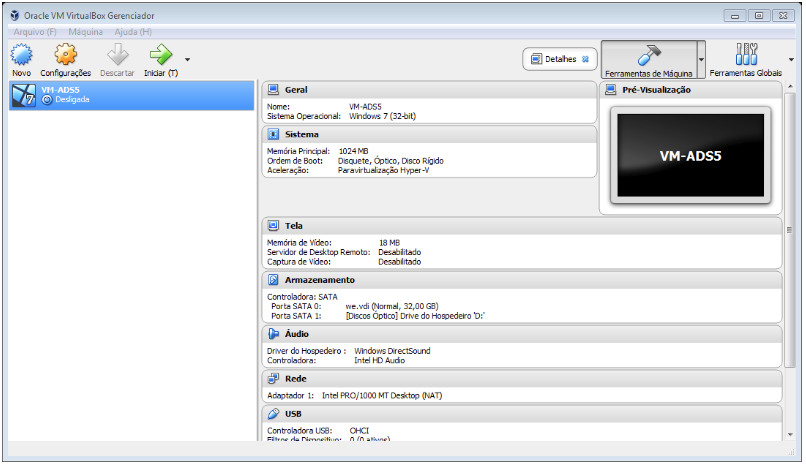Figure 1. Configurando máquinas virtuaisSuponha que tenha sido realizado um upgrade de mais 16 GB de memória e mais um disco rígido de 1TB na máquina hospedeira, com o objetivo de acrescentar mais recursos às suas máquinas virtuais.
-
Na guia Sistema, acesse a aba Placa-Mãe, vá a Memória base e adicione mais 1024 MB de memória RAM à máquina virtual.
O tamanho da nova quantidade de memória deve ser múltiplo de 4. É preciso deixar disponível para o sistema operacional nativo uma quantidade recomendada para um funcionamento estável.
 Figure 2. Configurando memória RAM
Figure 2. Configurando memória RAMObserve que na aba Processador há a opção de aumentar a quantidade de processadores virtuais. Por medida de segurança, mantenha a quantidade padrão de processadores.
Cuidado, pois a troca do número de processadores virtuais depois que a máquina virtual for instalada poderá causar instabilidade.
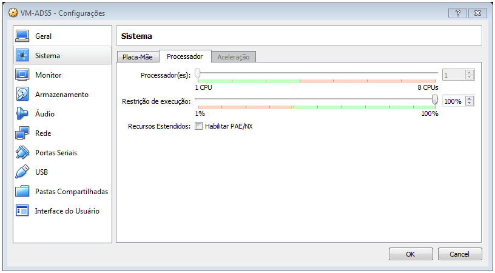Figure 3. Configurando processadoresNa guia Rede selecione a interface de rede chamada Adaptador 1 e altere o seu modo de conexão para Bridge. Faça também a alteração do endereço MAC da máquina virtual, clicando primeiro em Avançado e depois no botão que foi habilitado, fazendo com que o VirtualBox gere um novo endereço MAC para a máquina em questão.
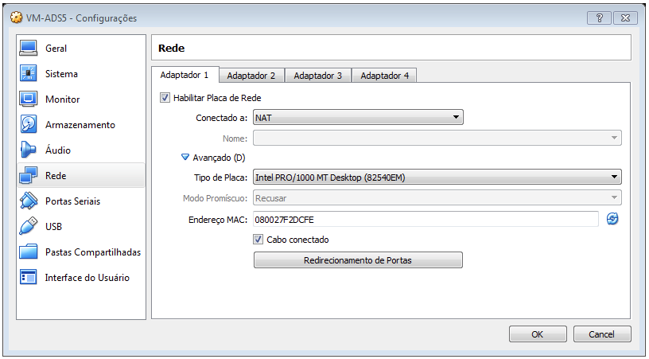Figure 4. Configurando rede
4) Adicionando uma máquina virtual
Para adicionar máquinas virtuais pré-existentes ao VirtualBox, precisaremos executar o Assistente de Importação de Appliance. O VirtualBox atualmente suporta a importação de máquinas virtuais gravadas no Formato Aberto de Virtualização (Open Virtualization Format - OVF/OVA). Para isso siga as instruções:
-
Clique no menu Arquivo e em seguida clique em Importar Appliance… para que seja exibida a tela do assistente de importação de appliance. Clique em Escolher.
-
Outra janela será apresentada solicitando a seleção de um appliance para importar. Selecione em Desktop\Aluno\VMs_PRONTAS\VM o arquivo LAB_W7_VM-ADS5.OVA e clique em Abrir.
-
As configurações de importação da máquina virtual serão apresentadas em forma de sumário. Clique em Finalizar para iniciar a importação da máquina virtual.
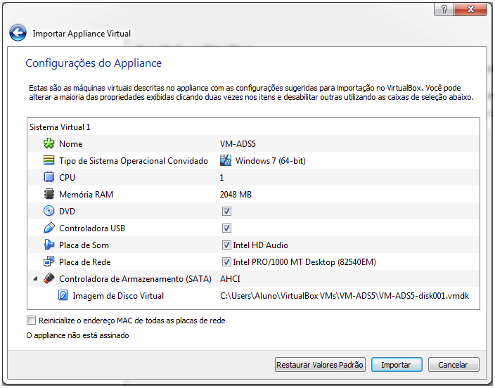Figure 5. Importando VMUma barra de progresso será exibida mostrando o avanço da importação da máquina virtual.
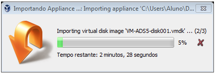Figure 6. Importando VM, progressoVocê poderá visualizar a máquina virtual importada na lista de máquinas virtuais do VirtualBox.
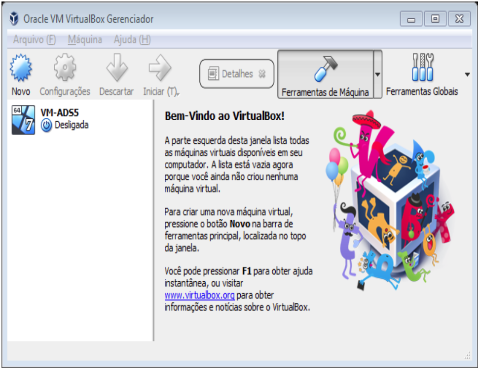Figure 7. VM importada com sucesso -
Inicie a máquina virtual e verifique se houve algum problema no processo.
Para evitar conflito de IP na rede, edite o endereço MAC da máquina virtual em Configurações/Rede/Avançado.
5) Utilizando snapshots
Snapshots são pontos de restauração das máquinas virtuais que podem ser usados para retornar a uma situação anterior de uma máquina virtual.
O recurso do snapshot é útil quando se quer fazer uma alteração no sistema operacional, com a segurança de poder recuperar o seu estado inicial caso algo dê errado durante a alteração. Você pode então criar um snapshot da máquina virtual antes de alterar o seu sistema, e se a alteração não for do seu agrado, é possível retornar ao estado anterior com o snapshot criado. O disco voltará ao mesmo ponto em que foi criado o snapshot, assim como a memória, se o mesmo for criado com esta opção.
Para criar um snapshot de uma máquina virtual, precisaremos de uma já criada. Para isto, na lista de máquinas virtuais do seu inventário, selecione a máquina VM-ADS5 que importamos na atividade anterior.
-
Localize no VirtualBox a aba Snapshots, clique no ícone Criar Snapshot, digite um nome e a descrição do snapshot tirado e clique em Ok.
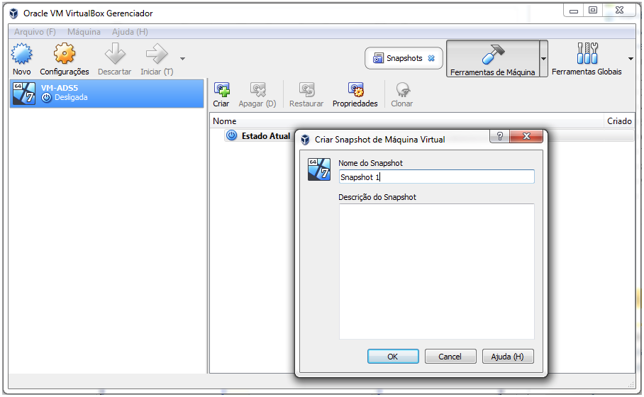Figure 8. Criando snapshots -
Inicie a máquina virtual VM-ADS5 e faça alterações no sistema. O login da máquina virtual é aluno e a senha é rnpesr.
Exemplo: crie diretórios, arquivos de texto, edite arquivos de configuração, apague arquivos existentes e instale programas.
-
Após alterar o sistema, desligue-o.
-
Volte à aba Snapshots e selecione o mesmo snapshot criado anteriormente. Depois clique no ícone Restaurar . Aparecerá uma janela para confirmação. Clique em Restaurar e aguarde a restauração da máquina virtual.
-
Inicie novamente a máquina virtual e perceba que ela retorna ao estado anterior, descartando todas as alterações realizadas.
6) Removendo uma máquina virtual
-
Selecione a VM que deseja excluir, clique com o botão direito e em seguida em Remover.
-
Será apresentada uma frase indicando que existem duas formas de excluir uma VM.
-
Apagar todos os arquivos: Apaga os arquivos de configuração da máquina virtual e também o seu disco rígido virtual.
-
Remover apenas: Apenas remove a máquina virtual do VirtualBox, mantendo os seus arquivos armazenados no disco rígido da máquina hospedeira.
-
7) Criando máquinas virtuais no VMware Workstation
Os passos para a instalação do VMware Workstation são muito semelhantes aos do VirtualBox. Ao final da instalação selecione a opção de uso para 30 dias. Para aproveitar todos os seus recursos é necessário a compra de uma licença.
-
Inicie o VMware Workstation e clique no botão Create New Virtual Machine ou acesse o menu File> New> Virtual Machine.
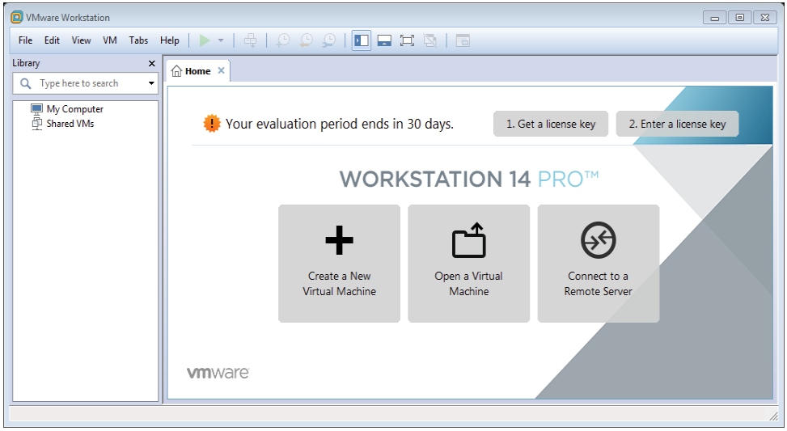Figure 9. Tela inicial do VMWareEm boas-vindas, você deverá optar entre criar uma máquina virtual típica (typical) ou personalizada (custom). Escolha a opção Custom para criar uma máquina virtual com configuração otimizada dos seus recursos. Clique em Next.
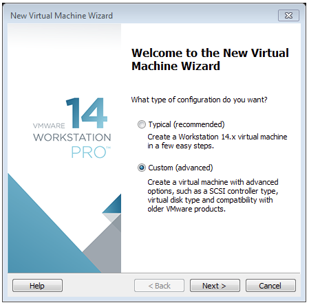Figure 10. Criação de VMsNesta etapa, defina a versão do VMware Workstation com a qual você deseja que a sua máquina virtual seja compatível (com as versões mais novas ou mais antigas). Escolha a versão atual do Workstation (14.x) e clique em Next.
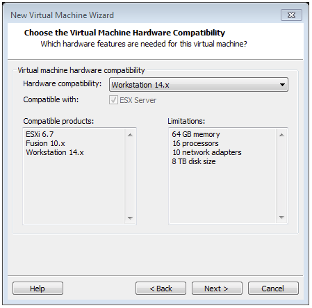Figure 11. Compatibilidade de hardwareSelecione a forma de instalação do sistema operacional: Instalar o SO a partir de uma mídia física de CD/DVD, de uma imagem ISO, arquivada no servidor de ISOs , ou instalar o sistema operacional depois. Escolha a última opção I wil install the operating system later, para instalar o sistema operacional depois e avance.
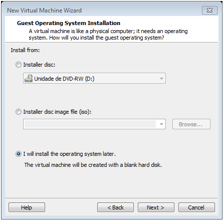Figure 12. Escolha da mídiaSelecione o SO e sua versão para instalação na máquina virtual (Guest Operating System). Clique em Next.
-
Em Virtual machine name informe como será identificada a máquina virtual. Este nome será identificado em todos os componentes do VMware Workstation. Utilize o nome VM-ADS5Ws.
-
Em Location, informe o diretório onde os arquivos da VM será salvos. Clique em Next.
-
Em Number of processors, configure o número de processadores da máquina hospedeira que a máquina virtual utilizará para o valor 1.
Em Number of cores per processor, configure o número de núcleos por processador da máquina física que a máquina virtual utilizará para o valor 1.
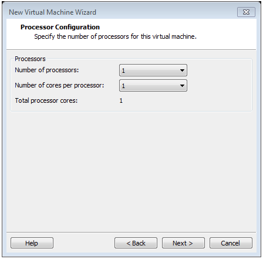Figure 13. Escolha do processador -
Selecione a quantidade de memória RAM em megabytes a ser alocada para uso da máquina virtual. Mantenha a opção padrão e clique em Next.
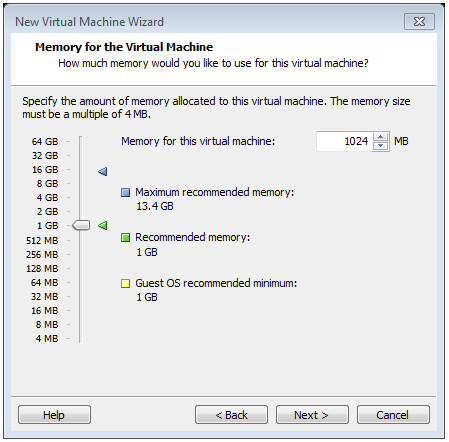Figure 14. Escolha da memória -
O VMware Workstation possui três opções de configuração de rede: Bridged, NAT e Host-only. Escolha a opção Bridged para que a máquina virtual tenha acesso direto à rede externa.
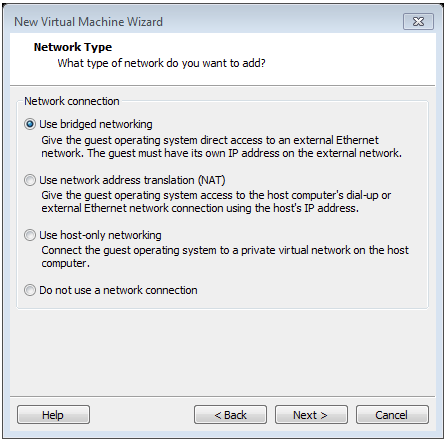Figure 15. Escolha da memória -
Defina o tipo de controladora SCSI que você pretende utilizar. Deixe a opção padrão selecionada (LSI Logic SAS) e clique em Next.
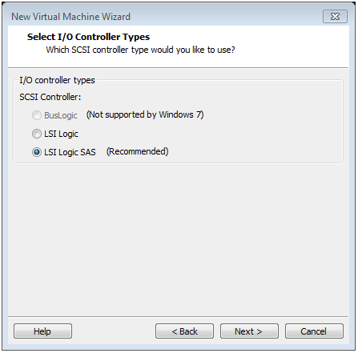Figure 16. Tipo de controladora de discoDefina o tipo do disco entre as opções SCSI ou IDE. Selecione SCSI e clique em Next.
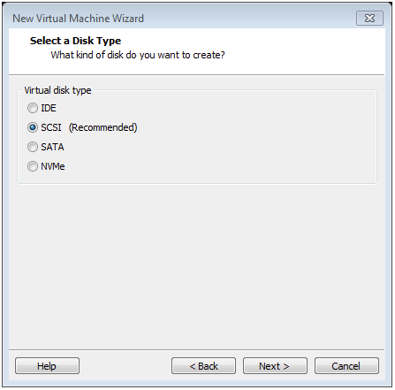Figure 17. Tipo de discoEm Disco, você pode escolher entre criar um novo disco virtual, utilizar um disco virtual existente ou utilizar um disco físico. Selecione a opção Create a new virtual disk para que seja criado um novo disco virtual. Clique em Next.
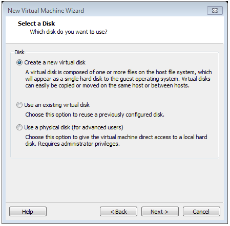Figure 18. Criar novo discoEm capacidade do disco é possível configurar:
-
O tamanho do disco rígido da máquina virtual;
-
A alocação de todo o espaço configurado para o momento da criação da máquina virtual (ou não);
-
Se os dados do disco estarão armazenados em um único arquivo ou serão divididos em mais arquivos.
Selecione 60GB como tamanho máximo do disco, marque a opção Store virtual disk as single file para que todo o conteúdo do disco rígido virtual seja armazenado em apenas um arquivo. Clique em Next para avançar.
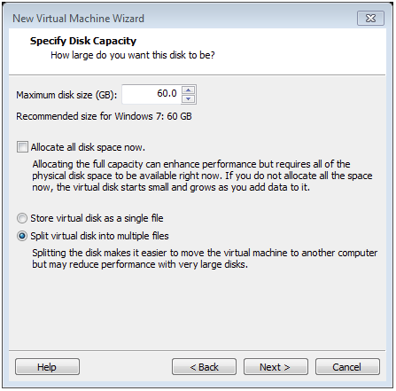Figure 19. Capacidade do discoIdentifique e escolha onde o HD virtual será salvo e clique em Next.
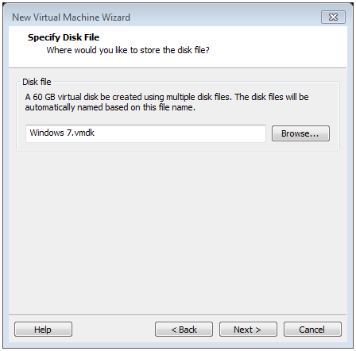Figure 20. Nome do disco -
-
Aparecerá a tela do sumário, ou seja, o resumo de toda a configuração da máquina virtual a ser criada. Neste momento, o VMware Workstation estará pronto para criar a sua máquina virtual.
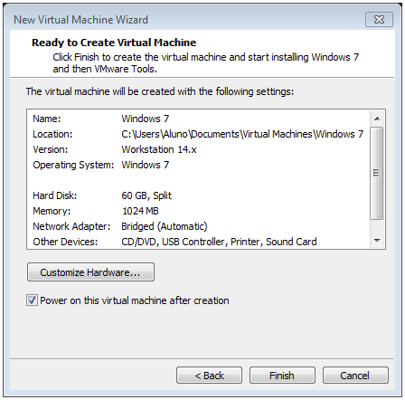Figure 21. Confirmação das escolhasClique em Finish para finalizar a criação.
8) Iniciando a máquina virtual
-
As máquinas virtuais disponíveis serão exibidas na janela principal do VMware Workstation. Selecione a máquina virtual criada (VM-ADS5) e inicie clicando em Power on this virtual machine.
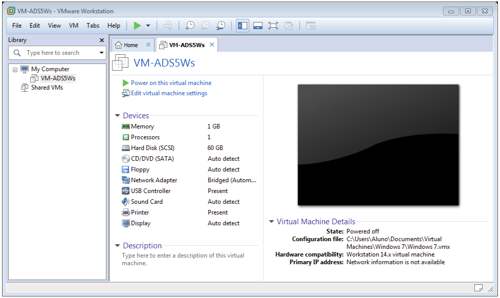Figure 22. Iniciar VMComo nenhum SO foi instalado, ao iniciá-la será apresentada uma tela parecida com os dizeres abaixo, informando que não foi encontrado nenhum sistema operacional.
Network boot from AMD Am79C970A Copyright (C) 2003-2005VMware, Inc. Copyright (C) 1997-2000Intel Corporation CLIENT MAC ADDR: 00 0C 29 45 E3 90 GUID: 564D95A9-506D-AA78-21B0-26E3F545E390 PXE-E51: No DHCP or proxyDHCP offers were received. PXE-M0F: Exiting Intel PXE ROM. Operating System not found
9) Alterando a configuração de uma MV
É possível editar a máquina virtual (MV) criada no VMware Workstation. Dentre outras opções, é possível alterar o nome da máquina virtual, adicionar outro disco rígido virtual, aumentar o tamanho de memória que a máquina alocará para o seu uso e adicionar mais interfaces de rede. Nesta atividade, iremos visualizar as opções de edição de máquinas virtuais do VMware Workstation.
-
Para editar uma máquina virtual, você precisará de uma já criada. Para isto, na lista de máquinas do seu inventário, selecione a máquina. Depois de selecionada, ao lado será aberto um sumário da máquina em questão. Clique no botão Edit virtual machine settings.
Suponha que tenha sido realizado um upgrade de mais 4 GB de memória e mais um disco rígido de 1 TB na máquina hospedeira, com o objetivo de acrescentar mais recursos às suas máquinas virtuais.
Em Memory há a opção de editar o tamanho da memória que a máquina virtual alocará para o seu uso. Altere o tamanho em Memory for this virtual machine para 1024 MB.
O tamanho da nova quantidade de memória deve ser múltiplo de 4. Lembrando que temos que deixar disponível para o sistema operacional nativo uma quantidade recomendada para que possa funcionar de forma estável.
-
Em Processors há a opção de editar o número de processadores (Number of processors) e o número de núcleos por processadores (Number of cores per processor) que a nossa máquina virtual utilizará. Não faça alterações nesta etapa, deixando as configurações de acordo com o que definimos na criação da máquina virtual.
-
Em Hard Disk é possível visualizar o caminho no qual está arquivado o disco rígido da máquina virtual (Disk file), analisar a sua capacidade atual (Capacity), informações de alocação e a forma como o disco rígido virtual foi armazenado (Disk information). Em Utilities são mostradas outras ferramentas para alteração e manutenção do disco rígido:
-
Map: utilizado para mapear o disco rígido virtual na máquina hospedeira Windows;
-
Defragment: semelhante ao Desfragmentador de disco do Windows, onde a ferramenta efetua operações no disco rígido para procurar e solucionar problemas de fragmentação;
-
Expand: utilizado para aumentar o tamanho do disco rígido da máquina virtual;
-
Compact: utilizado para compactar automaticamente o disco rígido da máquina virtual.
Em CD/DVD há a opção de ativar o drive de CD/DVD assim que a máquina virtual for ligada (Connect at power on), de fazer com que a máquina virtual use um drive físico (Use physical drive) ou fazer com que a máquina virtual use uma imagem ISO armazenada (Use ISO image file). Para esta atividade, utilizaremos a configuração da tela seguinte.
-
-
Em Network Adapter há também a opção de ativar a placa de rede da máquina virtual assim que ela for ligada (Connect at power on) e escolher o tipo de conexão de rede que utilizaremos:
-
Bridged: habilita a máquina virtual a ter acesso direto à rede;
-
Replicate physical network connection state: replica o estado da conexão da rede física;
-
NAT: opção que compartilha o endereço IP do host.
-
-
Também podemos editar o controlador USB da máquina virtual, ativando o suporte à alta velocidade para dispositivos com USB 2.0 e automaticamente conectar novos dispositivos USB. Mantenha as opções conforme a tela seguinte.
-
Podemos editar as propriedades de som da máquina virtual para decidir se ela utilizará a placa de som padrão do host, ou especificar a placa de som do host que a máquina virtual utilizará. Mantenha as opções conforme a tela seguinte.
-
É possível conectar uma impressora à máquina virtual, mas para isso ela precisa ter o VMware Tools instalado - suíte de utilitários que melhora o desempenho da máquina virtual. Mantenha as opções conforme a tela seguinte.
-
Por último, é possível editar as propriedades de vídeo da máquina virtual. Podemos ativar a aceleração 3D dos gráficos, usar as configurações de vídeo da máquina hospedeira ou especificar as configurações informando o número de monitores e a resolução máxima de cada monitor.
10) Adicionando uma máquina virtual
-
Na tela inicial do VMware Workstation clique em Open a Virtual Machine e selecione a VM já existente no caminho Desktop\Aluno\VMs_PRONTAS/VM da máquina hospedeira. Ao concluir o processo inicie a VM.
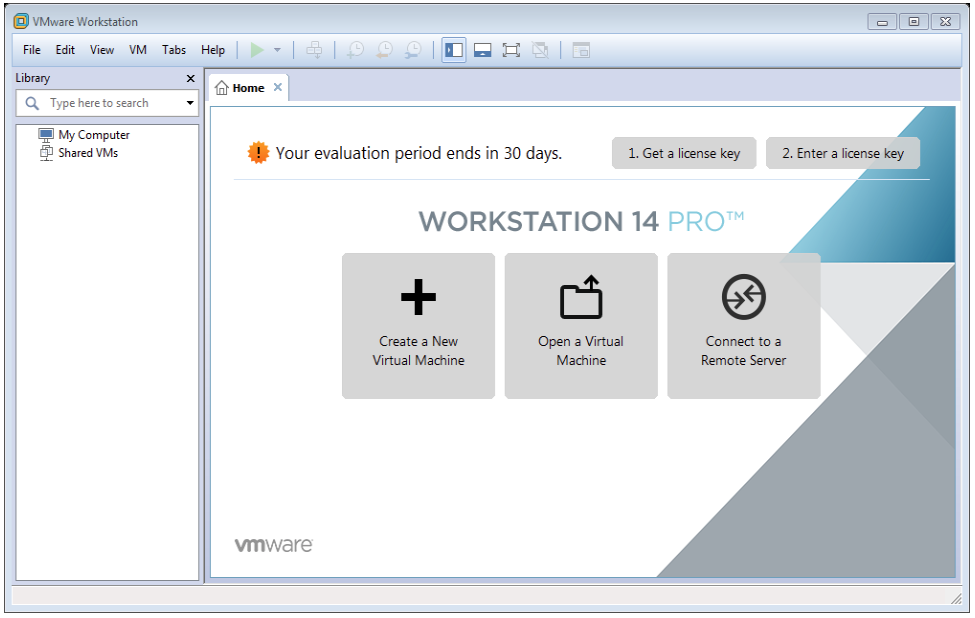Figure 23. Adicionar VM pronta
11) Utilizando snapshots
Como foi visto anteriormente no VirtualBox , o snapshots são pontos de restauração das máquinas virtuais que podem ser usados para retornar a uma situação anterior de uma VM.
Exemplo: você deseja fazer alguma alteração no sistema operacional, mas quer ter a segurança de recuperar o seu estado inicial caso algo dê errado durante a alteração. Você pode então criar um snapshot da máquina virtual antes de alterar o seu sistema, e se a alteração não for do seu agrado, será possível retornar ao estado anterior do sistema através do snapshot criado. O disco voltará ao mesmo ponto em que foi criado o snapshot, assim como a memória, se o mesmo for criado com esta opção.
-
Na lista Favorites selecione a máquina W7_VM-ADS5 que adicionamos na atividade anterior. Click com o botão direito do mouse em cima da VM e selecione Snapshot/ Take Snapshot…
-
Digite uma descrição para o snapshot a ser tirado, para que possamos identificá-lo posteriormente.
-
Inicie a máquina virtual recentemente adicionada e faça alterações no sistema. O login da máquina virtual é aluno e a senha é rnpesr.
Crie diretórios e arquivos de texto, edite arquivos de configuração, apague arquivos existentes, instale ou instale programas. Após as modificação, desligue a VM e volte ao menu Snapshot, mas desta vez acesse Snapshot Manager. Note que poderá voltar ao estado anterior ao Snapshot sem a necessidade de desligar a máquina.
12) Removendo máquinas virtuais
No VMware Workstation existem duas opções de remoção das máquinas virtuais: removê-las da lista de máquinas favoritas ou removê-las do disco rígido da máquina hospedeira. Para remover máquinas virtuais, abra o Workstation e certifique-se de que a máquina desejada está desligada, para que possa ser removida. Siga as instruções para a remoção.
No VMware Workstation, selecione a máquina virtual que você deseja excluir, vá ao menu VM> Manage e clique em Delete from Disk.
-
Ao clicar na função, é apresentada uma janela informando que essa ação é irreversível e que a mesma fará com que a máquina virtual seja excluída permanentemente. Caso você clique em Yes, a máquina virtual será excluída do gerenciamento do VMware Workstation e do disco rígido da máquina hospedeira. Para a atividade, clique em No para cancelar a exclusão.
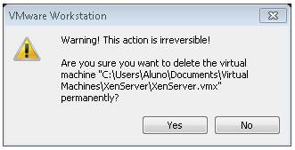Figure 24. Removendo VM definitivamente -
Caso queira remove-la apenas do inventário, clique sobre a máquina e selecione Remove. Aparecerá uma janela informando que a máquina será removida apenas do inventário.
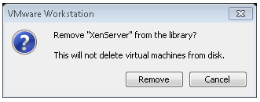Figure 25. Removendo VM do inventário
13) Captura de máquina física para virtual (P2V)
Physical-to-Virtual (P2V) é o processo que consiste em converter uma máquina física com os seus aplicativos e dados para uma máquina virtual, podendo hospedá-la em uma plataforma virtualizada.
Nesta atividade, o aluno terá que fazer a conversão da estação física do colega do lado para uma máquina virtual, utilizando como base a ferramenta de conversão do VMware Converter.
O instalador do VMWare converter está disponível na pasta \Desktop\Aluno\SESSÃO 1_2. A instalação é simples porém é necessário prestar atenção em algumas etapas: em "Setup Type", você deverá marcar a opção "Client-Server installation (advanced)" e em "HTTPS Service Port" altere a porta para 444 , clique em "next" e nesta tela, desmarque a opção "Join the VMware’s Custumer…", avance e clique em "install".
-
Antes de converter a máquina física, faça alguns procedimentos para que posteriormente possam identificar que realmente houve a conversão. Sugestões: trocar a cor do seu papel de parede, criar arquivos ".txt” no desktop etc.
-
Inicie o VMware Workstation Pro, e em "File" selecione "Virtualize a Physical Machine" e e clique em Next.
-
Nesta tela, você deverá adicionar o IP, usuário e senha da máquina a qual deseja converter.
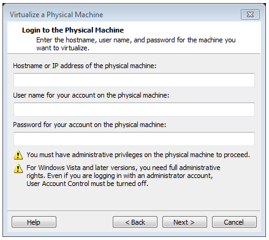Figure 26. Conversão de máquina física para virtual, parte 1 -
Adicione um nome a VM e e escolha o diretório para armazenar a máquina virtual.
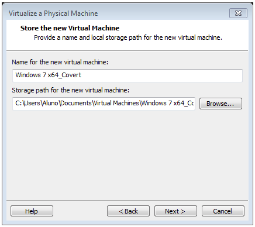Figure 27. Conversão de máquina física para virtual, parte 2 -
Nesta tela, autentique com usuário e senha da máquina física. Esta é a máquina onde o VMware Workstation está instalado. Avance e aguarde o final do processo.
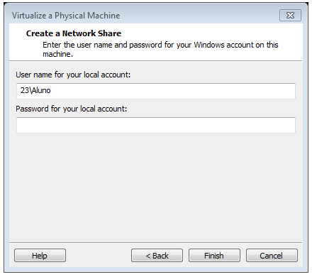Figure 28. Conversão de máquina física para virtual, parte 3
Obs.: Caso ocorra algum erro relacionado a espaço em disco, acesse o gerenciador do Windows 7 e aumente o espaço da partição "Reservado pelo Sistema" para no mínimo 100 megas.
Sessão 2: Configuração de Storage
1) Instalação do FreeNAS
-
Crie uma nova máquina virtual, na qual instalaremos o FreeNAS, do tipo BSD 64-bit.
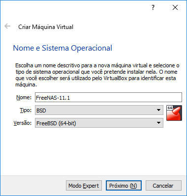Figure 29. Nome e tipo de VM -
Para a memória RAM, define 2GB.
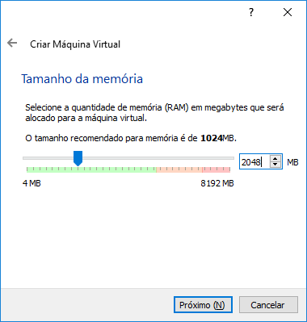Figure 30. RAM da VM -
Iremos adicionar um novo disco rígido:
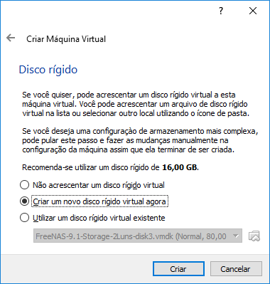Figure 31. Adicionar novo discoO tipo do disco será VDI, o formato nativo do Virtualbox.
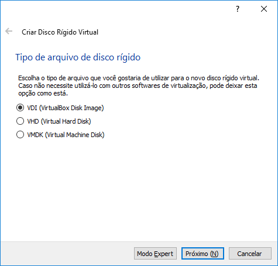Figure 32. Tipo do discoIremos usar alocação dinâmica, quando o disco cresce à medida que é utilizado.
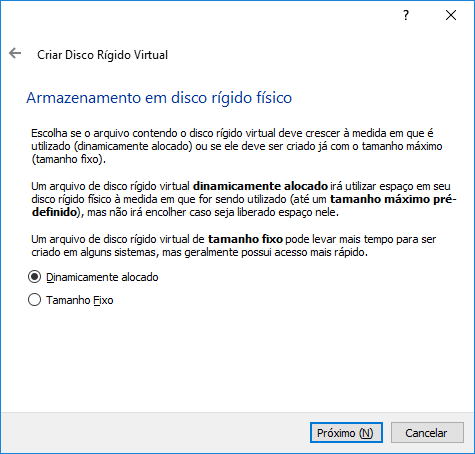Figure 33. Tipo de alocaçãoFinalmente, escolha o nome e o tamanho do disco (4 GB).
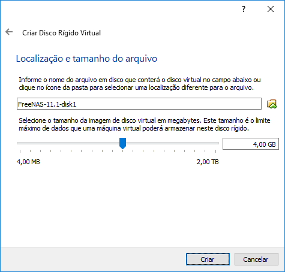Figure 34. Nome e tamanho do disco -
Criada a VM, acesse o menu Configurações. Vamos adicionar dois novos discos à máquina, onde serão armazenados os dados do storage. Em Armazenamento > Controladora SCSI, clique no ícone Adicionar novo disco.
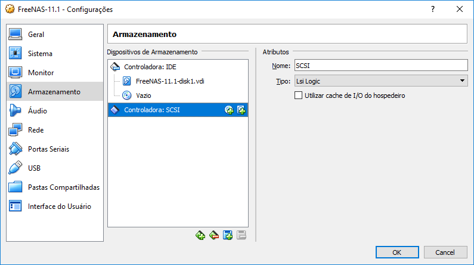Figure 35. Configurações de discoSelecione Criar novo disco.
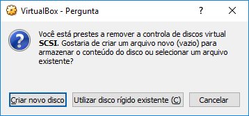Figure 36. Criar novo discoSelecione o nome do disco, e tamanho de 80 GB.
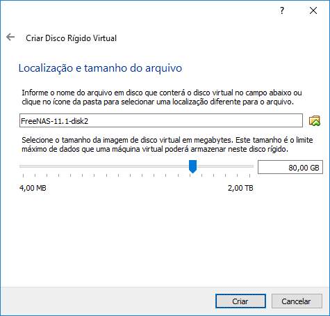Figure 37. Nome e tamanho do disco 2Repita o procedimento, adicionando um terceiro disco à VM, também de 80 GB.
Figure 38. Nome e tamanho do disco 3Finalmente, marque a opção Utilizar cache de I/O do hospedeiro para aumentar a performance no uso da VM.
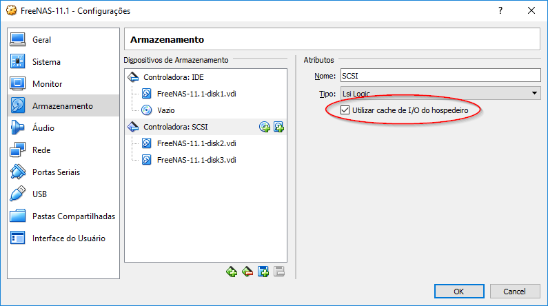Figure 39. Uso de cache de disco -
Ainda no menu Armazenamento, em Controladora IDE, adicione a imagem ISO de instalação do FreeNAS ao drive de CD virtual da VM.
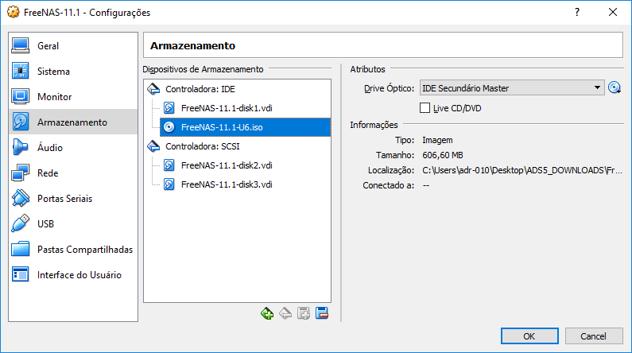Figure 40. Adicionando ISO de instalação -
Em Áudio, desabilite o áudio da VM. Como será um servidor, não fará falta.
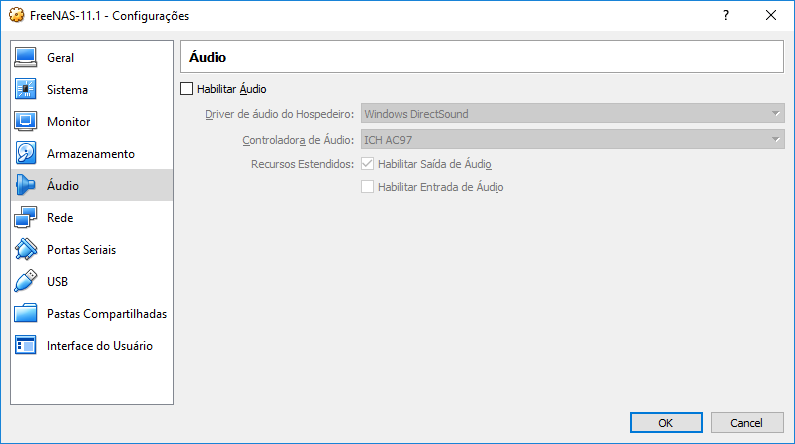Figure 41. Configurações de áudio -
Em Rede, altere o tipo de conexão do Adaptador 1 para Placa em modo Bridge, para conectar a VM diretamente com a rede externa.
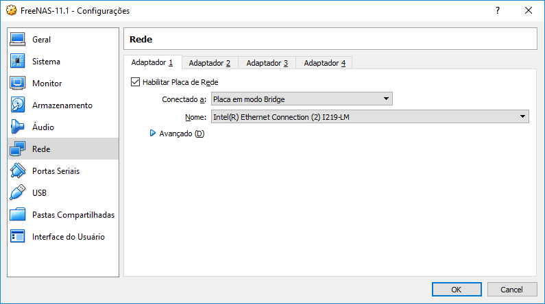Figure 42. Configurações de rede -
Em USB, marque a Controladora USB 1.1 (OHCI), para maior compatibilidade caso as extensões do Virtualbox não estejam instaladas.
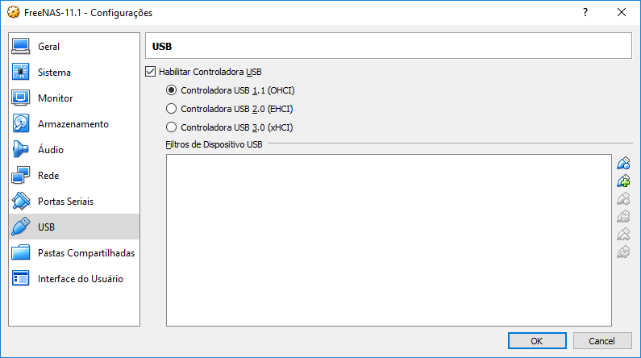Figure 43. Configurações USB -
Ligue a VM, e selecione a opção FreeNAS Installer na tela de boot.
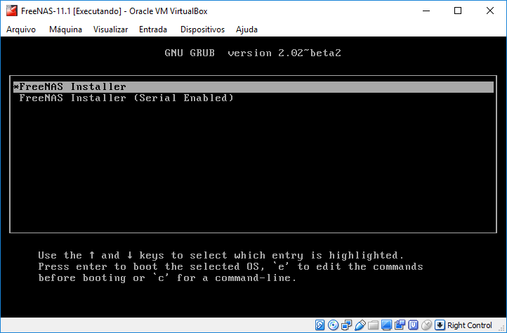Figure 44. Boot do instaladorA seguir, selecione Install/Upgrade.
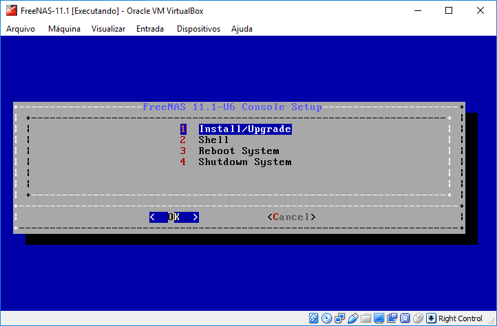Figure 45. Instalação, parte 1Você receberá um aviso que o computador possui menos de 8 GB de RAM. Clique em Yes para prosseguir.
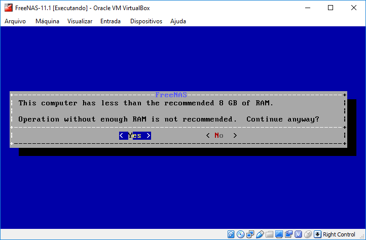Figure 46. Instalação, parte 2Para a instalação do FreeNAS, selecione o disco
ada0, de 4 GB. Iremos inicializar os demais posteriormente.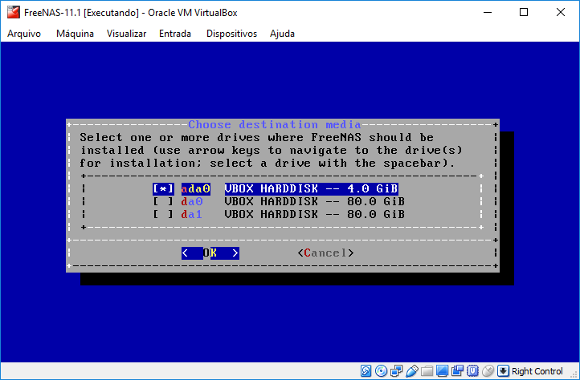Figure 47. Instalação, parte 3Confirme a formatação selecionando Yes.
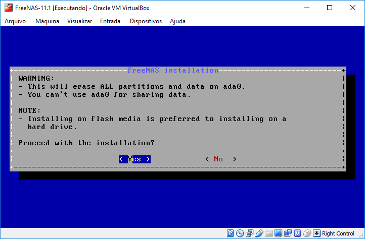Figure 48. Instalação, parte 4Para a senha do usuário
root, digiteVirt3sre confirme.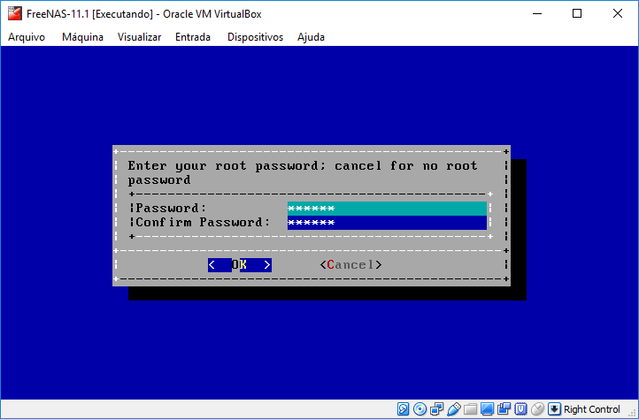Figure 49. Instalação, parte 5No tipo de boot do FreeNAS, selecione Boot via BIOS.
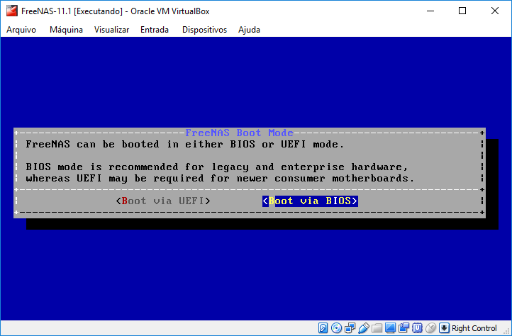Figure 50. Instalação, parte 6A instalação será iniciada, como mostrado abaixo.
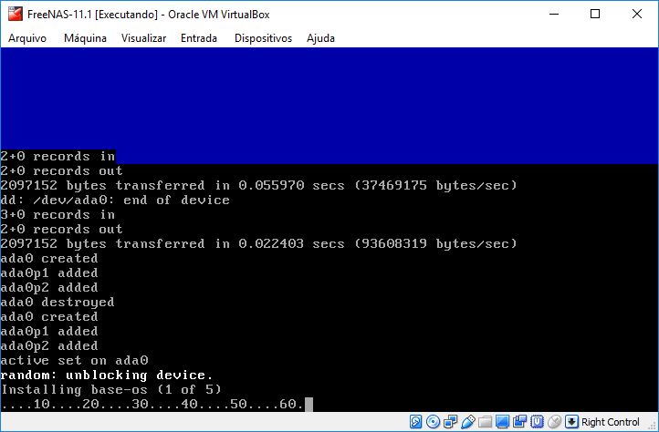Figure 51. Instalação, progressoAo final do processo, clique em OK para reiniciar o sistema.
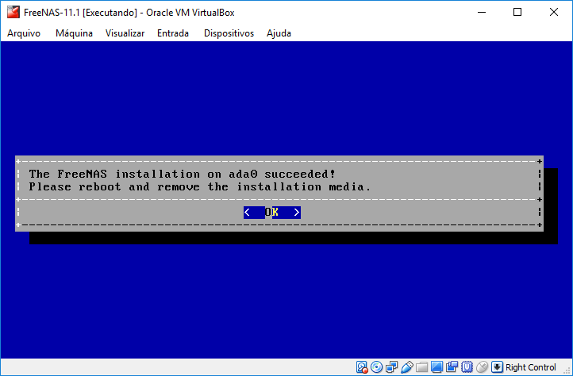Figure 52. Instalação concluída -
Como não retiramos a ISO da VM, após o boot veremos o menu de instalação novamente. Selecione Shutdown System.
Figure 53. Retirando ISO da VM, parte 1Acesse Configurações > Armazenamento e remova a ISO do drive IDE.
Figure 54. Retirando ISO da VM, parte 2
2) Configuração do FreeNAS
-
Ligue a VM. Você verá a tela de boot abaixo.
Figure 55. Boot do FreeNASPressione
ENTER, e selecione a opção Normal Bootup.Figure 56. Boot convencional -
Após o processo de boot, você verá o menu a seguir. Anote o endereço IP da interface web de usuário, que acessaremos a seguir.
Figure 57. Boot concluído -
Em sua máquina física, abra um navegador e digite o endereço IP anotado no passo anterior. Na tela de login, informe o usuário
roote senhaVirt3sr, como definido anteriormente.Figure 58. Login na interface web -
No wizard automático de configuração, defina linguagem, mapa de teclado e timezone como mostrado na figura a seguir:
Figure 59. Escolha de idioma, teclado e timezoneO próximo passo é inicializar um volume de armazenamento. Digite o nome
vol1e selecione o tipo Logs (equivalente a RAID 0).Figure 60. Configuração de volumePara configurações de autenticação, mantenha tudo vazio e clique em Next.
Figure 61. Configurações de autenticaçãoEm configurações de share, novamente mantenha vazio e clique em Next.
Figure 62. Configurações de sharePara configurações de mensagem, ative Console messages e clique em Next.
Figure 63. Configurações de mensagensFinalmente, confirme as alterações.
Figure 64. Wizard, confirmação -
Finalizado o wizard, acesse Storage > Volumes e clique em Criar zvol.
Figure 65. Criação de zvol, parte 1Defina o nome como
zvol1e tamanho de 80 GB. Iremos tentar manter o uso do pool abaixo de 50% para evitar degradação de performance, como documentado em https://www.ixsystems.com/documentation/freenas/11/sharing.html#extents .Figure 66. Criação de zvol, parte 2A tela final de configuração deverá ficar como se segue:
Figure 67. Criação de zvol, concluída -
Agora, acesse Sharing > Block (iSCSI) e configure um portal iSCSI em Adicionar Portal como mostrado a seguir:
Figure 68. Configuração de iSCSI, parte 1Em Iniciadores, defina um mapeamento
ALL:ALL.Figure 69. Configuração de iSCSI, parte 2Na configuração do Acesso Autorizado, defina uma conta
alunocom senharnpesr123456.Figure 70. Configuração de iSCSI, parte 3Nos destinos iSCSI, adicione um novo destino com nome
lun1, e apelidoTarget1.Figure 71. Configuração de iSCSI, parte 4Na configuração de Extents, defina um com nome
Extent1mapeando o dispositivozvol1criado anteriormente.Figure 72. Configuração de iSCSI, parte 5Finalmente, mapeie a
lun1para oExtent1, definindo uma LUN ID de1.Figure 73. Configuração de iSCSI, parte 6 -
O último passo é ativar o serviço iSCSI. Acesse Serviços e ative
iSCSI, ativando a opção Start on boot.Figure 74. Ativando iSCSI
Sessão 3: Introdução ao XCP-ng
1) Instalação do XCP-ng
-
Crie uma mídia bootável com o instalador do XCP-ng, conforme instruções providas pelo instrutor. Em seguida, insira a mídia na máquina destacada como hypervisor para a dupla e execute o boot via USB. Você verá a tela a seguir:
Figure 75. Tela inicial do XCP-ng -
Inicie o boot do sistema. A primeira tela será para a configuração do mapa de teclado: selecione
br-abnt2.Figure 76. Configuração de teclado -
Prossiga a instalação selecionando
Ok.Figure 77. Confirmação de instalaçãoAceite os termos de uso em
Accept EULA.Figure 78. Temos de uso -
Selecione o disco de instalação do sistema,
sda, que deve corresponder ao disco rígido da máquina local.Figure 79. Seleção de disco de instalação -
Escolha a fonte de instalação dos pacotes,
Local media.Figure 80. Seleção de fonte de pacotesNão faça a verificação da mídia, é um processo bastante demorado.
Figure 81. Verificação de mídia -
Defina a senha do
rootcomoVirt3sr.Figure 82. Definir senha do root -
O próximo passo é configurar a rede: mantenha a configuração em DHCP.
Figure 83. Configuração de rede, parte 1Depois, defina o nome de máquina como
xcp-ng-dX-gX, substituindoXpelo dados apropriados para seu grupo. Mantenha a configuração DNS como automática.Figure 84. Configuração de rede, parte 2 -
Agora, escolha o timezone do sistema. Primeiro, selecione a área geográfica
America…Figure 85. Timezone e hora, parte 1E em seguida a cidade apropriada, provavemente
Sao_PauloouRecife.Figure 86. Timezone e hora, parte 2Defina a configuração de tempo via NTP.
Figure 87. Timezone e hora, parte 3Para o servidor de consulta, defina manualmente o endereço
pool.ntp.br.Figure 88. Timezone e hora, parte 4 -
Tudo pronto para a instalação: confirme em
Install XCP-ng.Figure 89. Início da instalaçãoObserve o progresso:
Figure 90. Instalação em progressoQuando perguntado se deseja instalar supplemental packs, selecione No.
Figure 91. Instalação de pacotes adicionaisConcluído o processo, selecione Ok, espere o sistema reiniciar e remova a mídia de instalação.
Figure 92. Instalação concluída -
Após o boot do sistema, você verá a tela de sumário do XCP-ng, como mostrado a seguir.
Figure 93. Tela de sumário
2) Conhecendo alguns comandos básicos
-
Você pode abrir uma conexão de linha de comando local, usando a opção Local Command Shell. Digite a senha de
rootpara obter o acesso. Figure 94. Acesso à CLI local
Figure 94. Acesso à CLI local -
O XCP-ng possui uma ferramenta de gerenciamento em linha de comando chamada
xe. Esta ferramenta permite o controle do armazenamento de dados das máquinas virtuais, interfaces de redes associadas com as VMs, ente outros.Veja o comando
xe host-list, por exemplo:Figure 95. Listando hosts -
Durante a instalação, o XCP-ng particiona automaticamente o disco do servidor utilizado. São reservados para o sistema apenas 4 GB. O restante do disco é alocado em um volume LVM, dentro do qual podem ser armazenados os dados das máquinas virtuais. Para visualizar as informações do LVM, utilize comando
pvdisplayno shell do hypervisor:Figure 96. Visualizando volumes físicos -
O XCP-ng gerencia estes volumes LVM através da noção de Storage Repositories (SR). Um Storage Repository corresponde a uma área no storage onde são armazenados os discos virtuais de uma máquina virtual, ou as imagens ISO utilizadas para instalação de novas máquinas virtuais. Para uma listagem dos Storage Repositories disponíveis, utilize o comando
sr-list:Figure 97. Listando SRsNote que um dos Storage Repositories disponíveis é do tipo LVM no host local, cujo UUID consta no nome do Volume Group listado anteriormente. Durante a instanciação de novas máquinas virtuais, os discos serão automaticamente instanciados dentro deste Storage Repository.
-
Por padrão, o XCP-ng cria para cada interface de rede física uma bridge. Nesta, podem ser associadas as interfaces de rede das máquinas virtuais, permitindo aos sistemas virtualizados acessarem a rede externa de forma transparente.
As redes disponíveis para as VMs podem ser listadas com o comando
network-list:Figure 98. Listando redes
3) Instalação do XCP-ng Center
O XCP-ng Center é uma ferramenta capaz de gerenciar múltiplos servidores e máquinas virtuais.
-
Para iniciar a instalação do XCP-ng Center, execute o arquivo de instalação disponível em local indicado pelo instrutor. Você verá a tela a seguir:
Figure 99. Instalação do XCP-ng Center, parte 1O processo é bastante simples, bastando aceitar as opções padrão. Ao final do processo, clique em Finish.
Figure 100. Instalação do XCP-ng Center, parte 2
4) Conhecendo o XCP-ng Center
-
Execute o XCP-ng Center. O primeiro passo é adicionar um servidor: clique em Add New Server.
Figure 101. Adicionando novo servidor, parte 1Na tela seguinte, adicione o IP do seu hypervisor — informe a conta do usuário
roote senha configurada durante a instalação,Virt3sr.Figure 102. Adicionando novo servidor, parte 2Confirme que deseja salvar as credenciais e restaurar a conexão ao reabrir o XCP-ng Center, e clique em OK.
Figure 103. Adicionando novo servidor, parte 3Quando perguntado se deseja cadastrar o servidor no serviço de Health Check, clique em Close.
Figure 104. Adicionando novo servidor, parte 4 -
Uma vez adicionado o hypervisor, pode-se visualizar seu estado, performance e demais características diretamente a partir da ferramenta.
Figure 105. Informações do hypervisor -
Na aba Console há um terminal em modo texto para acesso ao hypervisor, de forma análoga ao que poderíamos fazer via console local,
sshou PuTTY.Figure 106. Acesso console ao hypervisor -
Informações sobre a utilização dos recursos do servidor podem ser obtidas na aba Performance. Note que, com a ausência de máquinas virtuais em execução, os recursos encontram-se subutilizados.
Figure 107. Performance do hypervisor
5) Configuração do repositório compartilhado de ISOs
No XCP-ng Center, são suportados repositórios de ISOs, acessados via protocolos CIFS ou NFS. Desta forma, o XCP-ng Center exige a utilização de um servidor de arquivos para o gerenciamento das ISOs. Neste curso, iremos utilizar um servidor NFS pré-configurado, cujo endereço de acesso será disponibilizado pelo instrutor.
-
Para criar um repositório de imagens ISO no XCP-ng, clique no botão New Storage na barra de ferramentas superior; em ISO Library, selecione a opção NFS ISO.
Figure 108. Adição de repositório ISO, parte 1 -
Escolha um nome para o repositório.
Figure 109. Adição de repositório ISO, parte 2 -
Informe o caminho completo para o repositório NFS, e a versão do protocolo.
Figure 110. Adição de repositório ISO, parte 3 -
Ao final do processo, acesse a aba Storage do repositório recém-adicionado para visualizar seu conteúdo, como mostrado a seguir.
Figure 111. Adição de repositório ISO, parte 4
6) Criação de máquinas virtuais
O XCP-ng permite criar máquinas virtuais paravirtualizadas a partir de templates pré-configurados ou máquinas virtuais em virtualização completa sem a necessidade de um template pré-configurado. Um template descreve algumas configurações da máquina virtual a ser criada (modo de virtualização, tamanho mínimo de memória, disco, etc.). A instalação pode ser tanto a partir de uma mídia ou através da rede, para alguns sistemas.
-
Utilize a ferramenta de criação de máquinas virtuais pressionando o botão New VM. Selecione o template Windows 10 (64-bit), como mostrado a seguir:
Figure 112. Criação de VM nova, parte 1 -
Defina o nome da nova máquina virtual a ser criada, que contenha alguma identificação do grupo (p. ex.,
win10-dX-gX).Figure 113. Criação de VM nova, parte 2 -
Agora, selecione a imagem ISO de instalação do sistema disponível no repositório ISO adicionado anteriormente.
Figure 114. Criação de VM nova, parte 3 -
Escolha o servidor-destino da VM, que será o único hypervisor disponível até aqui.
Figure 115. Criação de VM nova, parte 4 -
Para o número de vCPUs, defina
2, e escolha 4 GB de memória RAM total disponibilizada para a VM.Figure 116. Criação de VM nova, parte 5 -
Na escolha de GPUs dedicadas, simplemente clique em Next para passar ao próximo passo.
Figure 117. Criação de VM nova, parte 6 -
Na configuração de storage da VM, cliqueno botão Edit.
Figure 118. Criação de VM nova, parte 7Aumente o tamanho do disco para 40 GB, como mostrado a seguir.
Figure 119. Criação de VM nova, parte 8Confirme que o tamanho do disco está corretamente especificado e clique em Next.
Figure 120. Criação de VM nova, parte 9 -
Para a configuração de rede, aceite a opção-padrão do wizard.
Figure 121. Criação de VM nova, parte 10 -
Na tela Finish, confira que todos os dados da VM estão de acordo com o desejado, e clique em Create Now.
Figure 122. Criação de VM nova, parte 11 -
Após um curto período, a máquina virtual será criada. Acesse a aba General para visualizar suas características gerais.
Figure 123. VM nova criada com sucesso -
Acessando a aba Console, podemos visualizar a tela de instalação do Windows 10. Escolha idioma, teclado e clique em Avançar.
Figure 124. Instalação do Windows 10, parte 1Em seguida, clique em Instalar agora.
Figure 125. Instalação do Windows 10, parte 2Na tela de ativação do Windows, clique em Não tenho a chave do produto para prosseguir.
Figure 126. Instalação do Windows 10, parte 3Na escolha de versão do sistema, defina Windows 10 Pro e avance.
Figure 127. Instalação do Windows 10, parte 4Aceite os termos de licença do Windows, e prossiga.
Figure 128. Instalação do Windows 10, parte 5Em tipo de instalação, defina Personalizada: Instalar apenas o Windows (avançado).
Figure 129. Instalação do Windows 10, parte 6Escolha o único disco disponível, e clique em avançar.
Figure 130. Instalação do Windows 10, parte 7O processo de instalação será iniciado, como mostrado a seguir.
Figure 131. Instalação do Windows 10, progresso -
Durante a instalação da máquina virtual, utilize a aba Performance para monitorar a utilização de recursos da máquina virtual.
Figure 132. Monitoramento de performance de VM -
Após a instalação e reinício da máquina (e algum tempo de espera), os passos de finalização da instalação irão começar. Na escolha de região, defina Brasil e prossiga.
Figure 133. Finalizando a instalação do Windows 10, parte 1Escolha o layout de teclado Português (Brasil ABNT2).
Figure 134. Finalizando a instalação do Windows 10, parte 2Pule o passo para definição de um layout de teclado secundário.
Figure 135. Finalizando a instalação do Windows 10, parte 3Configure a VM para uso pessoal, como mostrado abaixo.
Figure 136. Finalizando a instalação do Windows 10, parte 4Quando da criação de conta, clique em Conta offline para criar um usuário local.
Figure 137. Finalizando a instalação do Windows 10, parte 5Na tela seguinte, confirme sua escolha clicando em Não.
Figure 138. Finalizando a instalação do Windows 10, parte 6Defina o nome do usuário local como
aluno.Figure 139. Finalizando a instalação do Windows 10, parte 7Em seguida, defina sua senha como
Virt3sr.Figure 140. Finalizando a instalação do Windows 10, parte 8Confirme-a:
Figure 141. Finalizando a instalação do Windows 10, parte 9Agora, surgirão três telas de definição de perguntas de segurança para a conta. Escolha quaisquer combinações de perguntas/respostas e prossiga.
Figure 142. Finalizando a instalação do Windows 10, parte 10Quando perguntado se deseja tornar a Cortana sua assistente pessoal, recuse.
Figure 143. Finalizando a instalação do Windows 10, parte 11Não aceite a configuração de histórico de atividades.
Figure 144. Finalizando a instalação do Windows 10, parte 12Finalmente, para as configurações de privacidade do sistema, desabilite todas as opções de clique em Aceitar.
Figure 145. Finalizando a instalação do Windows 10, parte 13Pronto! O Windows 10 está instalado e configurado.
7) Instalação dos adicionais de convidado
-
Para instalar os adicionais de convidado no XCP-ng Center, o primeiro passo é atualizar a máquina-alvo. Abra o Windows Update e inicie o processo de atualização.
Figure 146. Atualização da VM, parte 1Caso seja necessário reiniciar a máquina, aceite.
Figure 147. Atualização da VM, parte 2Ao final do processo (pode ser necessário invocar o processo de atualização múltiplas vezes), você deverá ver a mensagem Você está atualizado, como mostrado a seguir.
Figure 148. Atualização da VM, parte 3 -
Como o XCP-ng é uma versão open-source do XenServer proprietário da Citrix, não há permissão para distribuir os binários de instalação dos adicionais de convidade diretamente, como documentado em https://github.com/xcp-ng/xcp/wiki/Guest-Tools . Fizemos a extração da ISO de instalação dos guest tools a partir do CD de instalação da versão comercial do XenServer, disponibilizando-o no repositório de ISOs sob o nome
XenServer-guest-tools-VERSION.iso.Na console de acesso à VM, altere a imagem no drive de DVD virtual da máquina para a ISO de instalação dos guest tools, como mostrado a seguir:
Figure 149. Instalação do Guest Tools, parte 1Execute a instalação do pacote.
Figure 150. Instalação do Guest Tools, parte 2A máquina deverá ser reiniciada para instalação dos PV Drivers do XenServer, como visto abaixo.
Figure 151. Instalação do Guest Tools, parte 3 -
Ao final do processo de instalação, abra o Gerenciador de Dispositivos da máquina virtual e confira, em Controladores de armazenamento, que o driver XenServer PV Storage Host Adapter está instalado.
Figure 152. Instalação dos drivers de storage PV -
De volta à console do XCP-ng Center, cheque que o estado de virtualização da VM mostra que o I/O está otimizado, e que o agente de gerenciamento está instalado.
Figure 153. Guest Tools instalado com sucesso -
Na aba Performance, confira que os dados reportados pela máquina virtual estão muito mais precisos, após a instalação do agente.
Figure 154. Dados de performance após guest tools -
Não se esqueça de ejetar a imagem ISO acessando a aba Storage > Eject.
Figure 155. Ejetando imagem ISO
8) Acesso ao hypervisor via SSH
-
Durante as atividades deste curso iremos ter que digitar alguns comandos no terminal das VMs, os quais serão mostrados nos cadernos de atividade de cada sessão. Alguns desses comandos serão bastante longos e/ou terão uma sintaxe complicada — nesse caso, o ideal é que tenhamos a possibilidade de copiá-los diretamente do caderno para a console, evitando erros de digitação.
O protocolo de login remoto SSH é ideal para solucionar essa tarefa. Em ambiente Windows, dois dos métodos mais populares para efetuar logins remotos via SSH são os programas PuTTY (https://www.chiark.greenend.org.uk/~sgtatham/putty/latest.html) ou Cygwin (https://cygwin.com/install.html). Vamos, primeiro, visualizar os passos necessários usando o PuTTY.
Em qualquer caso, o primeiro passo é sempre descobrir qual o endereço IP da máquina remota à qual queremos nos conectar. No caso do hypervisor XCP-ng, basta visualizar o endereço IP da máquina observando a página de sumário em seu host físico.
O uso do PuTTY, por se tratar de um programa standalone com o objetivo único de efetuar login via SSH, é mais simples. Faça o download do PuTTY em sua máquina física Windows, usando a URL informada acima. Em seguida, apenas abra o programa e digite na caixa Host Name o endereço IP da máquina remota descoberto acima. Em seguida, clique em Open.
Figure 156. Login via SSH usando o PuTTY, parte 1Será mostrado um alerta de segurança avisando que a chave do host remoto não se encontra na cache local, o que pode configurar um risco de segurança. Clique em Yes para prosseguir com a tentativa de login.
Em seguida, será solicitado o nome de usuário com o qual efetuar a conexão. Informe o usuário
root, com senhaVirt3sr. Em caso de sucesso, você verá a tela parecida com a que se segue:Figure 157. Login via SSH usando o PuTTY, parte 2Para copiar/colar comandos no PuTTY, basta selecionar o texto desejado no ambiente da máquina física e digitar
CTRL + C, e em seguida clicar com o botão direito na janela do PuTTY. O texto selecionado será colado na posição do cursor. -
O uso do Cygwin é um pouco mais envolvido, já que seu objetivo é mais complexo: prover, em ambiente Windows, funcionalidade equivalente à que temos disponível em uma distribuição Linux. Para começar, faça o download e execute o instalador do Cygwin em sua máquina física Windows.
A instalação é, em grande parte, bastante similar à de qualquer aplicativo Windows. Na tela inicial, clique em Next. Em Choose a Download Source, mantenha marcada a caixa Install from Internet e clique em Next. Em Select Root Install Directory, os valores padrão estão apropriados — clique em Next. Na tela Select Local Package Directory, novamente, mantenha o valor padrão e clique em Next.
Agora, vamos selecionar a fonte de pacotes. Em Select Your Internet Connection, a menos que haja um proxy na rede local (informe-se com seu instrutor), mantenha marcada a caixa Direct Connection e clique em Next. Será feito o download da lista de espelhos disponíveis para o Cygwin. Em Choose A Download Site, qualquer espelho irá funcionar, mas evidentemente é desejável que escolhamos um que possua maior velocidade de download — o site http://linorg.usp.br é provavelmente uma boa opção, nesse caso. Clique em Next, e o instalador irá baixar a lista de pacotes disponíveis.
Em adição ao sistema-base padrão, é necessário instalar o OpenSSH para efetuar logins remotos. Na caixa de busca Search, no topo da tela, digite o termo de busca
openssh. Expanda a árvoreNete clique na palavra Skip na linha do pacoteopenssh: The OpenSSH server and client programs— ela irá alterar para a versão a ser instalada,7.9p1-1no caso da figura mostrada abaixo:Figure 158. Instalação do OpenSSH no CygwinClique em Next. Em Review and confirm changes, verifique que o Cygwin irá instalar o OpenSSH e todas as demais dependências do sistema-base Linux, como o shell
bashou ferramentas como ogrep, e clique em Next. O instalador irá fazer o download e instalação dos pacotes selecionados.Concluído o processo, procure pelo programa
Cygwin Terminalno menu iniciar da sua máquina física Windows, e execute-o. Agora, tente fazer login via SSH normalmente, como se estivesse em um shell Linux:Figure 159. Login via SSH usando o CygwinPara copiar/colar comandos no Cygwin, basta selecionar o texto desejado no ambiente da máquina física e digitar
CTRL + C, e em seguida mudar o foco para a janela do Cygwin e digitar a combinaçãoSHIFT + Insert. Para copiar texto a partir da janela do Cygwin, selecione-o e use a combinação de teclasCTRL + Insert. Para encontrar os arquivos localizados em sua máquina física, o diretório/cygdrive/Xpode ser usado para mapear para os discos da máquina local — por exemplo, o diretório/cygdrive/cmapeia diretamente para oC:\da máquina Windows.
9) Armazenamento de dados das máquinas virtuais
Quando novos discos virtuais são criados para as máquinas virtuais, é alocado espaço na partição LVM do hypervisor. Nesta etapa, será vista a relação entre os volumes virtuais gerenciados com o XCP-ng e a infraestrutura LVM. Utilize o comando xe help para praticar outros comando além dos exemplos abaixo.
-
Acesse o hypervisor via PuTTY ou Cygwin, como mencionado na atividade anterior. Utilize o comando
xe vm-disk-listpara listar os discos associados com uma VM específica (pode-se utilizar a teclaTABpara completar o nome da máquina virtual automaticamente).[root@xcp-ng-d1-g1 ~]# xe vm-disk-list vm=win10-d1-g1 Disk 0 VBD: uuid ( RO) : 40f50b9b-dac8-ada1-09fa-79024a5dece0 vm-name-label ( RO): win10-d1-g1 userdevice ( RW): 0 Disk 0 VDI: uuid ( RO) : 7354b5b1-debe-4b0a-b03c-7d3707f72525 name-label ( RW): win10-d1-g1 0 sr-name-label ( RO): Local storage virtual-size ( RO): 42949672960 -
Utilize o comando
lvdisplaypara exibir os volumes lógicos do LVM. Observe que, após a criação da nova máquina virtual, há um novo volume lógico cujo nome corresponde ao UUID do disco da VM e ao Storage Repository Local Storage.[root@xcp-ng-d1-g1 ~]# lvdisplay /dev/VG_XenStorage-9f9f3987-d606-87c4-c543-7277d8f2848a/VHD-7354b5b1-debe-4b0a-b03c-7d3707f72525 /run/lvm/lvmetad.socket: connect failed: No such file or directory WARNING: Failed to connect to lvmetad. Falling back to internal scanning. --- Logical volume --- LV Path /dev/VG_XenStorage-9f9f3987-d606-87c4-c543-7277d8f2848a/VHD-7354b5b1-debe-4b0a-b03c-7d3707f72525 LV Name VHD-7354b5b1-debe-4b0a-b03c-7d3707f72525 VG Name VG_XenStorage-9f9f3987-d606-87c4-c543-7277d8f2848a LV UUID 6YpqDE-1TYW-0g71-coRz-CVeN-svZg-cxvV6O LV Write Access read/write LV Creation host, time xcp-ng-d1-g1, 2018-11-28 10:29:41 -0200 LV Status available # open 1 LV Size 40.09 GiB Current LE 10262 Segments 1 Allocation inherit Read ahead sectors auto - currently set to 256 Block device 253:1
10) Snapshots de máquinas virtuais
Um snapshot de uma máquina virtual é uma cópia do seu estado em um determinado momento. Estas cópias podem ser utilizadas para fins de backup, gerando diversas versões funcionais da máquina virtual e recuperando um estado anterior, quando necessário.
-
Para criar um snapshot, acesse a aba Snapshots da VM e clique no botão Take Snapshot.
Figure 160. Criação de snapshots, parte 1Defina o nome do snapshot, e se deseja guardar apenas o estado dos discos ou também da memória da VM.
Figure 161. Criação de snapshots, parte 2 -
Concluído o snapshot, vamos testar sua funcionalidade. Abra a console da VM e crie um arquivo texto no Desktop do usuário
aluno, com qualquer conteúdo.Figure 162. Alteração do estado da VM -
Com a função Revert To, é possível retornar para algum dos estados previamente salvos. Em Actions, é possível utilizar um snapshot para criar novas máquinas virtuais. Um snapshot também pode ser convertido em um arquivo de backup ou template: como arquivo de backup, ele pode ser posteriormente restaurado em caso de perda dos dados no storage; já como template, uma nova máquina virtual pode ser gerada a partir do snapshot.
Selecione o snapshot criado no passo (1) e clique em Revert To:
Figure 163. Revertendo estado da VM, parte 1Confirme a reversão do estado da VM.
Figure 164. Revertendo estado da VM, parte 2Após a reversão do estado, note que o snapshot continua existindo e podendo ser usado posteriormente.
Figure 165. Revertendo estado da VM, parte 3 -
Retorne à console da VM — note que o arquivo texto que havíamos criado sumiu!
Figure 166. Estado da VM revertido com sucesso
Sessão 4: XCP-ng avançado
1) Criação de pools
-
Para criar um novo pool, é necessário que o XCP-ng Center esteja conectado aos dois hypervisors do grupo. Utilize o botão Add New Server para adicionar os dois hypervisors ao mesmo XCP-ng Center. A partir de agora, o gerenciamento dos hypervisors do grupo será centralizado em uma única máquina. Façam um revezamento no gerenciamento e comuniquem-se para melhor entendimento da atividade proposta.
Como mencionado, o primeiro passo é adicionar o segundo hypervisor usando o botão Add New Server.
Figure 167. Adicionando novo servidor ao XCP-ng Center -
É necessário remover um dos repositórios ISO dos servidores, para evitar duplicidade. No exemplo abaixo, iremos remover o repositório ISO da máquina
xpc-ng-d2-g1:Figure 168. Removendo repositório ISO, parte 1Confirme a remoção:
Figure 169. Removendo repositório ISO, parte 2E o "esquecimento" do repositório de ISOs, finalmente.
Figure 170. Removendo repositório ISO, parte 3 -
Agora, vamos criar o pool — clique na raiz dos elementos do datacenter e em seguida no botão New Pool:
Figure 171. Criação de pool, parte 1Escolha um nome sugestivo para o pool (no exemplo abaixo,
pool-g1), e inclua ambos os servidores no mesmo.Figure 172. Criação de pool, parte 2 -
Findo o processo, você verá o pool recém-criado com ambos os hypervisors abarcados.
Figure 173. Pool criado com sucesso
2) Dispositivo de armazenamento remoto
Para possibilitar a movimentação de uma máquina virtual entre dois hypervisors, é necessário a existência de um dispositivo de armazenamento compartilhado entre os mesmos. Isto pode ser feito através do compartilhamento de rede como NFS ou com dispositivos de disco remotos. Neste curso, iremos utilizar um storage baseado em software (FreeNAS), configurado durante a sessão 2. O acesso ao storage se dará através do protocolo iSCSI, encapsulando comandos SCSI através da rede padrão do sistema.
-
No XCP-ng Center, selecione o pool do grupo e em seguida o botão New Storage. Em Block based storage, selecione a opção iSCSI e prossiga.
Figure 174. Criação de storage compartilhado, parte 1Escolha um nome para o storage compartilhado:
Figure 175. Criação de storage compartilhado, parte 2Informe o endereço IP da máquina que possui o FreeNAS instalado para o grupo, e mantenha a porta padrão 3260. Clique em Scan Target Host — os campos Target IQN e Target LUN devem ser preenchidos automaticamente.
Figure 176. Criação de storage compartilhado, parte 3Confirme a formatação da LUN:
Figure 177. Criação de storage compartilhado, parte 4Ao final do processo, a LUN compartilhada deve ser adicionada ao pool de servidores. Confira as informações da mesma acessando a aba General.
Figure 178. Storage compartilhado adicionado com sucesso
3) Movendo máquinas virtuais para o Storage compartilhado
O disco das máquinas virtuais devem ser movidos para um dispositivo de armazenamento compartilhado, de forma que seja possível movê-las entre hypervisors na atividade seguinte.
-
Se ligada, desligue uma das VMs do grupo. Em seguida, clique com o botão direito sobre a mesma e selecione Move VM.
Figure 179. Movendo máquina virtual, parte 1Defina o pool do grupo como destino para a máquina virtual — não é necessário especificar um servidor-destino.
Figure 180. Movendo máquina virtual, parte 2Escolha o storage compartilhado configurado na atividade anterior como SR (storage repository) alvo para a movimentação da VM.
Figure 181. Movendo máquina virtual, parte 3 -
Você pode acompanhar o progresso de movimentação da VM na janela Events:
Figure 182. Progresso de movimentação da VM -
Ao final do processo, navegue até a LUN compartilhada e observe na aba Storage que o disco da máquina virtual encontra-se lá:
Figure 183. movimentação de máquina virtual realizada com sucesso -
Para evitar confusões nos passos posteriores, remova a máquina virtual que NÃO foi movimentada para o storage compartilhado — no exemplo abaixo, a VM
win10-d2-g1:Figure 184. Removendo VM não-compartilhada, parte 1Confirme que a VM sendo removida é de fato a que não se encontra no storage comum, e confirme.
Figure 185. Removendo VM não-compartilhada, parte 2
4) Migração manual de máquinas virtuais no pool
Uma vez que o disco da máquina virtual encontra-se no dispositivo compartilhado, é possível efetuar a migração on-line dentro de um mesmo pool entre hypervisors.
-
Ligue a VM que se encontra no storage compartilhado.
Figure 186. Ligando VM -
Após o boot, descubra o endereço IP da VM usando o comando
ipconfig, no prompt de comando do Windows.Figure 187. Descobrindo IP da VMPara permitir
pingpara a VM, é necessário habilitar regras no firewall do Windows. Abra o Windows Defender Firewall com Segurança Avançada e habilite as regras deSolicitação de Eco — ICMPv4 in.Figure 188. Habilitando ping no firewall -
Em sua máquina física, inicie um
pingsem limite de pacotes (com a opção-t) para o IP da máquina virtual. Você deverá ver respostas como as mostradas na janela abaixo:Figure 189. Ping para a VM com sucesso -
Agora, vamos mover a VM. Clique com o botão direito sobre a mesma e selecione Migrate to Server, especificando o outro servidor do pool.
Figure 190. Movendo máquina virtual -
Acompanhe o progresso de movimentação na janela Events.
Figure 191. Progresso da movimentação de VM -
Em sua janela de
pingno host físico, note que um baixíssimo número de pacotes foi perdido durante a migração — no exemplo abaixo, apenas um:Figure 192. Perda de pacotes durante migração -
Na aba Performance da VM, observe o comportamento do servidor durante o período de migração.
Figure 193. desc
5) Ativando a Alta Disponibilidade - HA
-
Agora, vamos ativar a alta disponibilidade para o pool de servidores configurado. Clique com o botão direito sobre o pool e selecione High Availability.
Figure 194. Ativando alta disponibilidade, parte 1Na tela inicial, clique em Next.
Figure 195. Ativando alta disponibilidade, parte 2Escolha o SR compartilhado para heartbeat entre os membros do pool.
Figure 196. Ativando alta disponibilidade, parte 3Ative o HA para a VM compartilhada do pool, mantendo o HA restart priority como Restart e Failures tolerated como 1 (como são utilizados apenas dois hypervisors, só é possível suportar uma falha).
Figure 197. Ativando alta disponibilidade, parte 4Revise as configurações, e confirme a criação do HA.
Figure 198. Ativando alta disponibilidade, finalização -
Vamos testar! Inicie um
pinginfinito para a VM.Figure 199. Ping iniciado para a VM -
Determine em qual hypervisor a VM está rodando. No exemplo abaixo, ela está na máquina
xcp-ng-d2-g1.Figure 200. VM rodando num hypervisor do pool -
Retire o cabo de rede ou desligue abruptamente o host físico no qual a VM está operando. Após algum tempo, ela será reiniciada no host remanescente do pool, como mostrado abaixo.
Figure 201. VM reiniciada em hypervisor ativo -
Note que o período de indisponibilidade de
pingé altíssimo — além do período de inatividade e detecção, temos que esperar a VM reiniciar para voltar a obter resposta.Figure 202. Indisponibilidade de ping -
Em Notifications > Alerts, note as mensagens de alerta levantadas para o pool.
Figure 203. Alertas de indisponibilidade no pool
6) Indisponibilização do pool master
-
Agora, vamos fazer o contrário. Retorne o pool ao seu estado de normalidade, com ambas as máquinas ativas. Feito isso, derrube o hypervisor que se manteve ativo nos passos anteriores, que deve estar rodando a VM compartilhada e operando como pool master (em nosso exemplo, a máquina
xcp-ng-d1-g1).Figure 204. Pool master indisponibilizadoComo mostrado a seguir, após algum tempo a máquina remanescente assume como pool master, e o failover de alta disponibilidade se torna inviável.
Figure 205. Hypervisor assume como pool master -
O comportamento do XCP-ng quando da indisponibilização do pool master pode parecer um pouco estranho, a princípio — isso se deve ao fato de que a recomendação para operação do mesmo é que haja no mínimo 3 hypervisors no pool, e não apenas 2, para estabelecimento de maioria. Os links a seguir documentam esse comportamento e oferecem sugestões de configuração para ambientes com menos máquinas disponíveis para integração ao pool:
Sessão 5: Introdução ao Hyper-V
1) Instalação do Hyper-V
O Hyper-V é instalado como um complemento em todas as edições Windows Server. Para criar um cluster de hypervisors, é necessário associá-los a um mesmo domínio. A criação deste domínio foge ao escopo do curso — por este motivo, para desenvolvimento das práticas desta sessão, utilizaremos um servidor AD com domínio (virtesr.edu.br) e usuários já configurado pela equipe de apoio local da unidade.
-
Crie uma mídia bootável com o instalador do Windows Server 2016, conforme instruções providas pelo instrutor. Em seguida, insira a mídia na máquina destacada como hypervisor para a dupla e execute o boot via USB. Você verá a tela a seguir:
Figure 206. Instalação do Hyper-V, parte 1Selecione o idioma, formato de tempo/moeda e teclado, e clique em Next.
-
Na tela seguinte, clique em Install now.
Figure 207. Instalação do Hyper-V, parte 2 -
Na escolha de versão do Windows Server 2016, selecione Datacenter Evaluation (Desktop Experience).
Figure 208. Instalação do Hyper-V, parte 3 -
Aceite os termos de licença, e prossiga.
Figure 209. Instalação do Hyper-V, parte 4 -
Para o tipo de instalação, selecione Custom: Install Windows only (advanced).
Figure 210. Instalação do Hyper-V, parte 5 -
Selecione o único disco disponível, e prossiga.
Figure 211. Instalação do Hyper-V, parte 6Caso o disco não esteja formatado, apague todas as partições antes de prosseguir — se houver problemas com o formato atual do disco, pode ser necessário corrigir a tabela de partições usando um disco de recuperação Linux (consulte seu instrutor).
-
O Windows Server 2016 começará a ser instalado. Aguarde a conclusão do processo.
Figure 212. Instalação do Hyper-V em progresso -
Concluído o procedimento, o sistema será reiniciado. Defina a senha do usuário
AdministratorcomoVirt3sr, como mostrado abaixo:Figure 213. Definição da senha administrativaFaça login no sistema, a seguir.
Figure 214. Login inicialTudo pronto! O sistema foi instalado com sucesso.
 Figure 215. Conclusão do processo de instalação
Figure 215. Conclusão do processo de instalação -
Vamos colocar o servidor no domínio
virtesr.edu.br. O primeiro passo é alterar o servidor DNS primário, o que pode ser feito através das opções IPv4 do sistema. Use o endereço indicado pelo instrutor.Figure 216. Configuração do DNS primárioDesabilite ainda o protocolo IPv6 da máquina, para evitar que outros servidores DNS sejam consultados prioritariamente.
Figure 217. Desabilitando o protocolo IPv6 -
Em System > System Properties, altere o domínio da máquina atual. Defina o nome de máquina como
HYPERV-DX-GY(substituindoXeYpor sua dupla/grupo), e torne-o membro do domíniovirtesr.edu.br.Figure 218. Alterando domínio da máquinaPara ingressar no domínio, será necessário informar um usuário com permissão de Domain Admin. Use a combinação de usuário/senha informada pelo instrutor para esse fim.
Figure 219. Autenticação no domínioSe houver sucesso no procedimento, você verá a janela a seguir:
 Figure 220. Ingresso no domínio com sucesso
Figure 220. Ingresso no domínio com sucessoO sistema deverá ser reiniciado. Aceite a sugestão da janela subsequente.
Figure 221. Reiniciando o sistema -
Após o reboot, faça login com o usuário do domínio (NÃO utilize o usuário
Administratorlocal, use uma das contasUserX, dependendo da máquina que você esteja usando — consulte o mapa de sala). Abra o prompt de comando e use os comandoswhoamiehostnamepara verificar que suas configurações foram realizadas com sucesso.Figure 222. Integração ao domínio concluída -
Vamos instalar o Hyper-V. Abra o Server Manager, e em seguida execute o wizard Add Roles and Features. Na página inicial deste, clique em Next.
Figure 223. Instalação do Hyper-V, parte 1Mantenha a caixa Role-base or feature-based installation marcada, e clique em Next.
Figure 224. Instalação do Hyper-V, parte 2Selecione seu servidor no pool (deve ser o único disponível), e prossiga.
Figure 225. Instalação do Hyper-V, parte 3Em Select server roles, marque a caixa Hyper-V.
Figure 226. Instalação do Hyper-V, parte 4Aceite a instalação das features adicionais, necessárias ao funcionamento do Hyper-V.
Figure 227. Instalação do Hyper-V, parte 5Na tela Select features, clique em Next.
Figure 228. Instalação do Hyper-V, parte 6Leia os avisos na tela Hyper-V, e prossiga.
Figure 229. Instalação do Hyper-V, parte 7Em Virtual Switches, marque a caixa com seu adaptador Ethernet físico e prossiga.
Figure 230. Instalação do Hyper-V, parte 8Para migração de VMs, mantenha todas as configurações inalteradas e prossiga. Iremos configurar esta característica em uma atividade futura.
Figure 231. Instalação do Hyper-V, parte 9Em Default Stores, mantenha os diretórios de armazenamento padrão do sistema e prossiga.
Figure 232. Instalação do Hyper-V, parte 10Confirme que todos os dados de instalação estão corretos, marque a caixa Restart the destination server automatically if required e inicie a instalação do Hyper-V.
Figure 233. Instalação do Hyper-V, confirmaçãoAo final do processo, clique em Close. Reinicie sua máquina, se ela não houver feito isso automaticamente.
Figure 234. Instalação do Hyper-V concluída
2) Gerenciamento do Hyper-V
O Hyper-V pode ser gerenciado através do centro de controle do servidor ou por ferramentas que utilizem a interface Windows Management Instrumentation (WMI) . Scripts para PowerShell que utilizam esta infraestrutura podem ser encontrados em: http://pshyperv.codeplex.com/
Durante o curso, o Server Manager será utilizado para acessar o snap-in de gerenciamento do Hyper-V.
-
Para acessar a interface de gerenciamento, clique em Server Manager > Tools e selecione Hyper-V Manager.
-
Localize a entrada para a máquina local, e clique no atalho Hyper-V Settings.
Figure 235. Configurações do Hyper-V -
Em Virtual Hard Disks e Virtual Machines, localize o caminho padrão utilizados para armazenar as imagens e configurações das máquinas virtuais. O Hyper-V mantém o particionamento efetuado na instalação do Windows.
Figure 236. Armazenamento de VHDsFigure 237. Armazenamento de configurações de VMs -
Em Keyboard, observe o mapeamento das teclas modificadoras (
Ctrl,AlteWindows) quando utilizadas nas máquinas virtuais.Figure 238. Configurações de atalhos de teclado -
Volte a interface de gerenciamento e utilize o link Virtual Switch Manager para editar as configurações de rede do ambiente virtual. Acesse as configurações da interface de rede local disponível em Virtual Networks, e configure a interface de rede como externa. Marque também a caixa Allow management operating system to share this network adapter.
Figure 239. Configurações de rede virtual -
Durante a instalação do Hyper-V, foi configurada uma rede virtual conectada a uma interface física de rede. Observe que as redes podem ser do tipo:
-
Externa: rede conectada a uma interface física;
-
Somente Interno: para comunicação entre máquinas virtuais e o hypervisor;
-
Privada: somente visível para as máquinas virtuais.
Os endereços MACs são atribuídos durante a criação das máquinas virtuais e, podem ser alterados em MAC Address Range.
Figure 240. Faixa de endereços MAC -
3) Acesso ao servidor de ISOs
No Hyper-V, o acesso ao servidor com os arquivos ISO utilizadas para instalação de máquinas virtuais deve ser realizado através de uma unidade de rede mapeada no Hypervisor.
-
Acessando o Windows Explorer clique em Computer e, na parte superior da janela, clique em Map network drive.
Figure 241. Mapeando unidade de rede, parte 1Selecione uma letra (
Z, por exemplo) e informe o caminho completo até o compartilhamento CIFS (URL informada pelo instrutor). Marque a caixa Reconnect at sign-in.Figure 242. Mapeando unidade de rede, parte 2Após o mapeamento, navegue para a unidade de rede e verifique seu conteúdo.
Figure 243. Unidade de rede mapeada com sucesso
4) Criação de máquinas virtuais
-
De volta ao Hyper-V Manager, acesse New > Virtual Machine. Na tela inicial, clique em Next.
Figure 244. Criação de VM, parte 1Especifique um nome relevante para a VM (no exemplo abaixo,
win10-d1-g1), e clique em Next.Figure 245. Criação de VM, parte 2Agora, escolha a geração 2 para a VM:
Figure 246. Criação de VM, parte 3Na alocação de memória para a VM, determine 4 GB.
Figure 247. Criação de VM, parte 4Em rede, defina como conexão o único virtual switch disponível em seu ambiente.
Figure 248. Criação de VM, parte 5Na configuração do VHDX, mantenha como padrão o caminho de armazenamento e altere seu tamanho para 40 GB.
Figure 249. Criação de VM, parte 6Na definição de uma imagem ISO para instalação do sistema-alvo, aponte o compartilhamento de rede que foi adicionado na atividade anterior. Caso ele não esteja sendo mostrado pelo Windows Explorer, digite manualmente o caminho completo até o share CIFS com a imagem ISO de instalação do Windows 10, como mostrado no exemplo abaixo.
Figure 250. Criação de VM, parte 7Na tela de sumário final, confirme que as informações de criação da VM estão corretas e clique em Finish.
Figure 251. Criação de VM, finalização -
Uma vez criada a VM, clique com o botão direito na mesma em em seguida em Connect para abrir a console de interação.
Figure 252. Abrindo a console da VMAgora, clique em Start para ligar a máquina virtual.
Figure 253. Ligando a VM -
Você verá a tela de instalação do Windows 10, da mesma forma que fizemos em sessões anteriores. Faça a instalação do SO seguindo os passos delineados na sessão 3.
Figure 254. Instalação do Windows 10Instalado e configurado o SO, você estará o Desktop padrão do Windows 10, como mostrado a seguir.
Figure 255. Windows 10 instalado com sucesso
5) Configuração padrão das máquinas virtuais
No atalho Settings, é possível alterar quase todos os recursos associados a uma máquina virtual.
-
Em Processor, é possível definir a quantidade de processadores lógicos, reservas de recursos e limites de utilização.
Figure 256. Configurações de processador da VM -
Em SCSI Controller > Hard Drive, note que o disco virtual criado utiliza conexão SCSI, por padrão. .desc

Observe atentamente a localização do arquivo VHDX da máquina virtual: iremos movê-lo brevemente, na atividade a seguir.
6) Replicação de VM entre Hyper-V
Nesta atividade iremos testar uma das mais importantes funcionalidades do Hyper-V: replicação de máquinas virtuais. O processo de configuração é simples e por consumir poucos recursos pode ser implementado em pequenas e médias empresas. Siga os passos abaixo com bastante atenção para conhecer melhor seu funcionamento.
-
Vamos preparar o sistema para replicação das VMs. Primeiro, desligue a máquina virtual criada na atividade (4), se estiver ligada.
Em seguida, crie a pasta nova
C:\vms, como mostrado a seguir.Figure 257. Criando pasta de compartilhamentoAgora, vá ao local de armazenamento do arquivo VHDX da máquina virtual (que visualizamos no passo 2 da atividade 5), recorte-o e cole na pasta
C:\vms, como se segue:Figure 258. Movendo VHDX da máquina virtual -
De volta ao Hyper-V Manager, em Settings > Hardware > SCSI Controller > Hard Drive, informe o novo caminho do disco virtual para o Hyper-V.
Figure 259. Relocando caminho do VHDX -
Em Replication Configuration, marque a caixa Enable this computer as a Replica server. Marque a caixa Use Kerberos (HTTP), na porta 80. Finalmente, em Authorization and storage, marque o botão Allow replication from any authenticated server e especifique o caminho de busca
C:\vms. Confira abaixo:Figure 260. Configurações de replicaçãoO Hyper-V irá avisar que é necessário configurar o firewall local para permitir tráfego na porta indicada.
Figure 261. Aviso de configuração de firewall -
Abra o Windows Firewall with Advanced Security e habilite a regra Hyper-V Replica HTTP Listener (TCP-In).
Figure 262. Habilitando regra de firewall -
Agora sim! De volta ao Hyper-V Manager, clique com o botão direito sobre a VM e depois em Enable Replication.
Figure 263. Habilitando replicação, parte 1Na tela inicial, clique em Next.
Figure 264. Habilitando replicação, parte 2Em Replica server, digite o nome de máquina do hypervisor remoto que receberá a réplica de VM (este será o hypervisor do seu colega, não a máquina local). No exemplo abaixo, especificamos a máquina
HYPERV-D2-G1.Figure 265. Habilitando replicação, parte 3Em Specify Connection Parameters, mantenha a porta de conexão em 80, uso de autenticação Kerberos (HTTP) e marque a caixa Compress the data that is transmitted over the network.
Figure 266. Habilitando replicação, parte 4Na escolha de VHDs de replicação, marque o disco virtual da VM corrente.
Figure 267. Habilitando replicação, parte 5Quanto à frequência de atualização de envio de mudanças para o servidor de réplica, selecione 30 segundos.
Figure 268. Habilitando replicação, parte 6Na configuração de pontos de restauração, marque Create additional hourly recovery points, com frequência de 24h, e marque a caixa que habilita criação de snapshots VSS, com frequência de 4h.
Figure 269. Habilitando replicação, parte 7No método inicial de replicação, marque a caixa Send initial copy over the network, e Start replication immediately. Clique em Next.
Figure 270. Habilitando replicação, parte 8Confirme que as opções de replicação estão corretas, e clique em Finish.
Figure 271. Habilitando replicação, finalização -
Acompanhe o progresso de envio da réplica através da coluna Status da VM.
Figure 272. Progresso de envio de réplicaAo receber a réplica da máquina virtual do hypervisor de seu colega, também é possível acompanhar o progresso de recebimento de mudanças na coluna Status.
Figure 273. Progresso de recebimento de réplica -
Terminados os processos de replicação, tente iniciar a VM remota.
Figure 274. Iniciando VM sob replicaçãoO sistema reporta erro, informando que a máquina está em processo contínuo de replicação.
Figure 275. Erro ao inicial VM sob replicação -
Vamos testar a funcionalidade de replicação. Inicie um ping infinito (
ping -t) para uma das VMs da dupla.Figure 276. Ping para VM em operaçãoRemova o cabo de rede ou desligue abruptamente o hypervisor-pai da VM que está recebendo o ping. No outro hypervisor, navegue para Replication > View Replication Health para visualizar o que aconteceu com a máquina.
Figure 277. Monitoramento de replicaçãoNote que o sistema reporta problemas, informando que não é possível contatar o hypervisor responsável pela replicação.
Figure 278. Replicação com problemasEm Replication > Failover, vamos ativar a tolerância a falhas da VM, assumindo o controle pela operação da máquina sendo replicada.
Figure 279. Ativação do failover de VMO sistema avisa que o failover deve ser ativado apenas se a VM primária estiver em estado de falha. Como este é o caso (já que indisponibilizamos o hypervisor primário), confirme a operação de failover.
Figure 280. Confirmação de failover de VMEspere a VM ligar, e depois verifique: é possível efetuar
pingpara a máquina virtual? Outra pergunta: caso o hypervisor primário volte a tornar-se disponível, quais passos devem ser realizados para retirar a VM secundária do estado de failover e retorná-la para o estado de replicação?
Sessão 6: Hyper-V avançado
1) Configuração de Cluster
-
Antes de iniciar a configuração do cluster, devemos desabilitar a replicação ativada no final da sessão anterior. Em ambas as VMs, clique com o botão direito e navegue para Replication > Remove Replication.
Figure 281. Removendo replicação, parte 1Confirme a operação.
Figure 282. Removendo replicação, parte 2 -
O Windows Server 2016 oferece um recurso para a agregação de servidores em clusters de alta disponibilidade. Para adicionar, abra o Server Manager e acesse Add Roles and Features.
Figure 283. Instalação do Failover Cluster, parte 1Confirme a instalação baseada em roles.
Figure 284. Instalação do Failover Cluster, parte 2Selecione o servidor para instalação no pool.
Figure 285. Instalação do Failover Cluster, parte 3Em Select server roles, clique em Next.
Figure 286. Instalação do Failover Cluster, parte 4Em Select features, marque a caixa Failover Clustering.
Figure 287. Instalação do Failover Cluster, parte 5Confirme a instalação de features adicionais necessárias ao funcionamento do Failover Cluster.
Figure 288. Instalação do Failover Cluster, parte 6Confirme a instalação, na janela seguinte.
Figure 289. Instalação do Failover Cluster, parte 7Concluído o processo, clique em Close.
Figure 290. Instalação do Failover Cluster, parte 8 -
A partir deste ponto, a atividade deverá ser realizada em grupo, em apenas um dos hypervisors Windows Server 2016. Para iniciar a configuração do cluster, acesse Tools > Failover Cluster Manager dentro do Server Manager.
Figure 291. Configuração do Failover Cluster, parte 1Na nova janela, na aba Management, clique em Create Cluster. O assistente de criação de clusters será iniciado em seguida.
Figure 292. Configuração do Failover Cluster, parte 2Leia as informações iniciais na tela Before You Begin, e em seguida clique em Next.
Figure 293. Configuração do Failover Cluster, parte 3Em Select Servers, digite o nome dos dois hypervisors do grupo, usando a nomenclatura de nome de máquina (FQDN) registrado junto ao Active Directory. Pode-se usar o endereço IP das máquinas, se desejado. Confira o exemplo a seguir:
Figure 294. Configuração do Failover Cluster, parte 4Em Validation Warning, marque o botão Yes. When I click Next (…) para confirmar a execução de testes de validação antes da criação do cluster.
Figure 295. Configuração do Failover Cluster, parte 5O assistente de validação de configuração será aberto. Na janela inicial, leia as informações preliminares e clique em Next.
Figure 296. Configuração do Failover Cluster, parte 6Em Testing Options, marque o botão Run only tests I select para visualizar e especificar quais testes de validação serão realizados.
Figure 297. Configuração do Failover Cluster, parte 7Na tela Test Selection, mantenha todas as caixas exceto Storage Spaces Direct marcadas, e clique em Next.
Figure 298. Configuração do Failover Cluster, parte 8Em Confirmation, verifique a lista de testes a serem realizados, e inicie-os.
Figure 299. Configuração do Failover Cluster, parte 9Após algum tempo, a lista de resultados será mostrada, como exemplificado abaixo. Observe que foram levantados alertas devido à falta de um disco compartilhado entre os nós do cluster, o que iremos resolver a seguir.
Figure 300. Configuração do Failover Cluster, parte 10De volta ao wizard de configuração do Failover Cluster, defina um nome sugestivo para o cluster da dupla.
Figure 301. Configuração do Failover Cluster, parte 11Em Confirmation, verifique as informações do cluster, marque a caixa Add all eligible storage to the cluster e finalmente clique em Next.
Figure 302. Configuração do Failover Cluster, parte 12Concluído o processo, clique em Finish.
Figure 303. Configuração do Failover Cluster, concluído -
Confira se o cluster criado pode ser visualizado nos dois hypervisors do grupo, usando o Failover Cluster Manager.
Figure 304. Cluster criado com sucessoEm Nodes, note que é possível observar que ambas as máquinas estão conectadas ao cluster em estado Up.
Figure 305. Nodes conectados ao cluster
2) Configuração de storage compartilhado
Da mesma forma que em outras atividades foi necessário configurar um dispositivo de armazenamento compartilhado (FreeNAS) entre os nodes, aqui faremos o mesmo. Este compartilhamento permitirá a migração de máquinas virtuais.
-
Este passo deve ser realizado em ambos os hypervisors da dupla.
No Server Manager, inicie a ferramenta Tools > iSCSI Initiator.
Figure 306. Configuração iSCSI, parte 1O sistema irá informar que o serviço iSCSI não foi iniciado. Clique em Yes para iniciá-lo, bem como configurá-lo como ativado em boots subsequentes do servidor.
Figure 307. Configuração iSCSI, parte 2Na nova janela que se abrir, digite em Target o endereço IP do FreeNAS que será usado como storage compartilhado entre os nodos do cluster. Evidentemente, deve-se usar o mesmo storage para ambos os hypervisors. Em seguida, clique em Quick Connect.
Figure 308. Configuração iSCSI, parte 3Na nova janela, verifique que a LUN correta foi exibida pelo iSCSI Initiator, e clique em Done.
Figure 309. Configuração iSCSI, parte 4Na aba Discovery, note que o endereço IP e porta corretos do servidor FreeNAS figuram em ambos os hypervisors do grupo.
Figure 310. Configuração iSCSI, parte 5Agora, navegue para a aba Volumes and Devices e clique no botão Auto Configure.
Figure 311. Configuração iSCSI, parte 6Deverá surgir uma string longa representando o mapeamento da LUN do storage remoto no sistema local, como mostrado no figura a seguir.
Figure 312. Configuração iSCSI, parte 7 -
Realize os passos seguintes em apenas um hypervisor do grupo.
No Server Manager, acesse Tools > Computer Management.
Figure 313. Inicialização da LUN, parte 1Em Storage > Disk Management, note que há um novo disco de 80 GB conectado; este disco corresponde à LUN no storage remoto. Observe, ainda, que ele se encontra em estado offline.
Figure 314. Inicialização da LUN, parte 2Clique na proximidade da palavra Offline dentro do quadro do disco e depois em Online para torná-lo disponível.
Figure 315. Inicialização da LUN, parte 3Agora, clique novamente e selecione Initialize Disk.
Figure 316. Inicialização da LUN, parte 4Na nova janela, marque a caixa com o nome do disco e selecione o tipo de partição MBR para o mesmo.
Figure 317. Inicialização da LUN, parte 5De volta à janela principal, clique com o botão direito sobre o espaço não-inicializado do disco e selecione a opção New Simple Volume.
Figure 318. Inicialização da LUN, parte 6O wizard de configuração de disco será aberto. Clique em Next.
Figure 319. Inicialização da LUN, parte 7Para o tamanho do volume do disco, mantenho o valor máximo especificado automaticamente.
Figure 320. Inicialização da LUN, parte 8Assinale uma letra qualquer para o disco (no exemplo,
X), e clique em Next.Figure 321. Inicialização da LUN, parte 9Formate o volume em NTFS, selecione um label com nome apropriado e marque a caixa Perform a quick format.
Figure 322. Inicialização da LUN, parte 10Na janela final, confirme suas seleções e clique em Finish.
Figure 323. Inicialização da LUN, parte 11De volta ao Computer Management, note que o disco foi inicializado e uma letra foi assinalada a ele.
Figure 324. Inicialização da LUN, concluídaRepita os passos desta etapa no segundo hypervisor da dupla. Não será necessário formatar o disco novamente, mas os passos de inicialização e assinalar letra ao disco deverão ser realizados. Ao final do processo, o disco deverá estar disponível de forma análoga ao que foi mostrado na tela acima.
-
Realize os passos seguintes em apenas um hypervisor do grupo.
Abra o Failover Cluster Manager e em Storage > Disks, clique em Add Disk.
Figure 325. Adicionando disco compartilhado ao cluster, parte 1Na janela seguinte, o disco compartilhado (que deve estar disponível nos dois membros do cluster) é mostrado. Marque a caixa e clique em OK.
Figure 326. Adicionando disco compartilhado ao cluster, parte 2De volta ao Failover Cluster, note que o disco foi adicionado e encontra-se em estado Online.
Figure 327. Adicionando disco compartilhado ao cluster, parte 3Clique com o botão direito sobre o disco, e em seguida em Add to Cluster Shared Volumes.
Figure 328. Adicionando disco compartilhado ao cluster, parte 4O storage compartilhado será adicionado ao cluster, nos dois hypervisors. Acesse o caminho
C:\ClusterStorage\Volume1para acessar o volume compartilhado.Figure 329. Adicionando disco compartilhado ao cluster, concluído
3) Migração de máquinas virtuais
-
Em apenas um dos hypervisors do grupo, copie o arquivo VHDX da máquina virtual local para o storage compartilhado.
Figure 330. Cópia do arquivo VHDXAcompanhe o progresso da cópia:
Figure 331. Progresso de cópiaAo final do processo, a pasta
C:\ClusterStorage\Volume1deve conter o arquivo VHDX da máquina virtual original.Figure 332. Cópia concluída -
No Failover Cluster, vamos criar uma nova máquina virtual que utilize o VHDX copiado anteriormente. Acesse Roles > Virtual Machines > New Virtual Machine.
Figure 333. Criação de VM no cluster, parte 1Selecione o nodo-alvo para a VM (qualquer um é uma opção válida).
Figure 334. Criação de VM no cluster, parte 2Defina um nome apropriado para a VM do cluster, marque a caixa Store the virtual machine in a different location e aponte a pasta
C:\ClusterStorage\Volume1\Virtual Machinespara armazenamento da configuração da VM. Crie a pasta, caso esta não exista.Figure 335. Criação de VM no cluster, parte 3Escolha a geração 2 para a VM.
Figure 336. Criação de VM no cluster, parte 4Defina 4 GB de memória RAM para a máquina virtual.
Figure 337. Criação de VM no cluster, parte 5Escolha o único virtual switch disponível para a saída de rede da VM.
Figure 338. Criação de VM no cluster, parte 6Na tela Connect Virtual Hard Disk, marque a caixa Use an existing virtual disk e navegue até o caminho do arquivo VHDX que foi copiado no pass (1) desta atividade.
Figure 339. Criação de VM no cluster, parte 7Na tela de sumário, confirme as opções de criação da máquina virtual e clique em Finish.
Figure 340. Criação de VM no cluster, finalizaçãoO Failover Cluster irá reportar a criação da VM com sucesso, a seguir.
Figure 341. VM criada no cluster com sucesso -
Observe a VM disponível na janela Roles do Failover Cluster. Clique em Connect para abrir a console de comunicação com a máquina virtual.
Figure 342. Acesso à VM do cluster, parte 1Com a console aberta, clique em Start para ligar a VM.
Figure 343. Acesso à VM do cluster, parte 2Uma vez ligada a VM, use o prompt de comando do Windows para descobrir o endereço IP da máquina, via comando
ipconfig.Figure 344. Acesso à VM do cluster, parte 3Lembre-se de desativar o firewall do Windows para permitir que pacotes ICMP sejam respondidos pela VM.
Figure 345. Acesso à VM do cluster, parte 4 -
De sua máquina física, inicie um ping infinito (comando
ping -t) para a VM, acompanhando a resposta aos pacotes.Figure 346. Ping iniciado para VM no cluster -
No Failover Cluster, clique com o botão direito na VM e selecione Move > Live Migration > Select Node.
Figure 347. Migração de VM, parte 1Selecione o nó do cluster para o qual a máquina será movida.
Figure 348. Migração de VM, parte 2Na coluna Information, acompanhe o progresso de migração da máquina virtual.
Figure 349. Migração de VM, parte 3 -
Concluído o Live Migration, volte ao comando ping rodando em sua máquina física e observe quantos pacotes foram perdidos durante o processo — poucos, não é mesmo? No exemplo abaixo, apenas 3 pacotes ICMP foram perdidos:
Figure 350. Pacotes perdidos durante migração de VM
4) Alta Disponibilidade
O Hyper-V oferece suporte ao monitoramento de servidores por heartbeat e a reinicialização das máquinas virtuais que se tornam inoperantes por causa de falhas no sistema. Vamos testar essa funcionalidade?
-
Para que o cluster consiga negociar a alta dispobilidade, é necessário que seja criado um disco compartilhado dedicado à manutenção do estado do cluster, o chamado quórum.
Abra a configuração do servidor FreeNAS que está sendo usado pelo cluster, e em Armazenamento, clique sobre o volume ZFS e depois em Criar zvol.
Figure 351. Criação de volume compartilhado no storage, parte 1Defina um nome para o zvol, um comentário apropriado e tamanho de 2 GB. Note que não é necessário que o disco de quórum seja particularmente grande — de fato, de acordo com a documentação da Microsoft (https://support.microsoft.com/en-hk/help/280345/quorum-drive-configuration-information), 500 MB são suficientes para essa partição.
Figure 352. Criação de volume compartilhado no storage, parte 2Em Compartilhamento > Block (iSCSI) > Targets, crie uma segunda LUN para o disco compartilhado recém-criado.
Figure 353. Criação de volume compartilhado no storage, parte 3Em Extents, crie um novo extent para fazer a amarração da LUN.
Figure 354. Criação de volume compartilhado no storage, parte 4Finalmente, em Destinos Associados, correlacione o Target e o Extent sob um número de LUN.
Figure 355. Criação de volume compartilhado no storage, parte 5 -
Em ambos os hypervisors do grupo, abra o Server Manager > Tools > iSCSI Initiator e reconecte-se no storage FreeNAS para fazer um rescan das LUNs disponíveis, com o botão Quick Connect.
Figure 356. Adicionando nova LUN ao cluster, parte 1Na nova janela, note que a LUN 2 é detectada. Clique sobre a mesma e em seguida em Connect.
Figure 357. Adicionando nova LUN ao cluster, parte 2Na aba Volumes and Devices, clique em Auto Configure para que a LUN seja relacionada a um mount point local no servidor.
Figure 358. Adicionando nova LUN ao cluster, parte 3 -
Em apenas um dos hypervisors, abra o Server Manager > Tools > Computer Management . Navegue para Storage > Disks e torne o disco Online, como fizemos antes. Em seguida, clique em Initialize Disk e selecione o formato MBR.
Figure 359. Inicializando disco de quórum, parte 1Da mesma forma que fizemos antes, inicie New Simple Volume e defina uma letra para o disco. Na tela de escolha de sistema de arquivos, mantenha NTFS e defina um label apropriado para o disco.
Figure 360. Inicializando disco de quórum, parte 2Ao final do processo, o disco de quórum deve estar disponível como mostrado na figura abaixo:
Figure 361. Inicializando disco de quórum, concluídoNo outro hypervisor do grupo faça configurações análogas de forma a tornar o disco de quórum acessível, como fizemos nos passos acima. Não é necessário reformatar o disco.
-
Em apenas um dos hypervisors, acesse o Failover Cluster. Em Storage > Disks, clique em Add Disk.
Figure 362. Adicionando disco de quórum ao cluster, parte 1Selecione o disco de quórum, com capacidade de 2 GB.
Figure 363. Adicionando disco de quórum ao cluster, parte 2 -
Clique com o botão direito sobre o cluster, e em seguida em More Actions > Configure Cluster Quorum Settings.
Figure 364. Configurando o quórum do cluster, parte 1Na tela inicial do wizard de configuração do quórum do cluster clique em Next.
Figure 365. Configurando o quórum do cluster, parte 2Em Select Quorum Configuration Option, marque o botão do meio, Select the quorum witness.
Figure 366. Configurando o quórum do cluster, parte 3Depois, selecione Configure a disk witness.
Figure 367. Configurando o quórum do cluster, parte 4Selecione o disco que foi configurado como quórum, que deve ser o único disponível para o cluster.
Figure 368. Configurando o quórum do cluster, parte 5Verifique que suas configurações estão corretas, e clique em Next.
Figure 369. Configurando o quórum do cluster, parte 6No sumário final, clique em Finish para encerrar o wizard de configuração.
Figure 370. Configurando o quórum do cluster, finalizado -
De volta ao Failover Cluster, em Storage > Disks, verifique que o Cluster Shared Volume e o Disk Witness in Quorum estão ambos corretamente configurados.
Figure 371. Quórum configurado com sucessoNote que o quórum possui um Owner node, ou nó-dono. Neste nó, é possível visualizar o disco de quórum montado diretamente no Windows Explorer.
Figure 372. Disco de quórum disponível no nó-dono -
Vamos testar a alta disponibilidade! Navegue para Roles e determine qual o nó-dono da máquina virtual em operação no cluster.
Figure 373. Nó-dono da VM identificadoInicie um ping infinito (
ping -t) para a VM. Em seguida, desligue o nó-dono da máquina virtual ordeiramente (i.e. selecionando a opção Shut Down no menu Iniciar do Windows Server 2016). Observe como rapidamente o nó-dono da VM é repassado para o outro host físico do cluster, e poucos pacotes são perdidos durante a migração da máquina.Figure 374. Migração automática em caso de indisponibilidade -
Claro, o teste do passo anterior foi feito de "caso pensado": ou seja, o servidor Windows que foi indisponibilizado foi desligado ordeiramente, e teve a oportunidade de avisar o outro membro do cluster e mover o estado da VM antes de concluir seu desligamento. E se essa máquina fosse desligada abruptamente?
Vamos testar: faça um live migration da VM de volta para o servidor original.
Figure 375. Migração da VM de volta para o nó-dono originalAgora, inicie um ping infinito para a VM e puxe o cabo de rede ou desligue "no botão" o nó-dono da VM, causando um desligamento abrupto. Observe que a VM entra em estado Unmonitored e os pacotes ICMP começam a ser perdidos.
Figure 376. VM indisponível após desligamento abruptoDe fato, a VM fica indisponível por um longo período, como visto abaixo. O nó remanescente do cluster irá aguardar um período de 4 minutos (valor padrão, configurável, como documentado em https://blogs.msdn.microsoft.com/clustering/2015/06/03/virtual-machine-compute-resiliency-in-windows-server-2016/)
Figure 377. VM indisponível por longo períodoEm Nodes, observe que após 4 minutos o hypervisor desligado entra em estado Isolated.
Figure 378. Hypervisor em estado IsolatedA VM é reiniciada no nó remanescente do cluster, e os pacotes ICMP começam a ser respondidos novamente:
Figure 379. VM reiniciada e disponível -
Note que todos os testes exemplificados até aqui buscaram desligar o hypervisor que não atuava como mestre do cluster e não era o nó-dono do disco de quórum. E se fizermos isso, o que acontece?
Figure 380. Testando indisponibilização do nó-mestre do clusterMova o disco de quórum e VM para o mesmo nó, que deverá atuar como mestre do cluster. Em seguida, teste: o que acontece se desligarmos abruptamente esse host físico? O disco de quórum, VM e liderança do cluster serão assumidos pelo outro membro? E, se sim, após quanto tempo?
Sessão 7: Introdução ao VSphere
1) Instalação do VMware ESXi
-
Crie uma mídia bootável com o instalador do ESXi, conforme instruções providas pelo instrutor. Em seguida, insira a mídia na máquina destacada como hypervisor para a dupla e execute o boot via USB. Você verá a tela a seguir:
Figure 381. Tela inicial de boot do ESXiSelecione a primeira opção para iniciar o instalador.
-
Você verá a tela de boas-vindas do ESXi. Aperte
ENTERpara continuar.Figure 382. Instalação do ESXi, parte 1 -
Pressione
F11para aceitar o termo de licença da ferramenta, e prossiga.Figure 383. Instalação do ESXi, parte 2 -
Selecione o disco físico da máquina local (provavelmente do tipo SATA ou ATA, como mostrado abaixo) para instalar o hypervisor.
Figure 384. Instalação do ESXi, parte 3O instalador avisa que os dados do disco serão apagados com o processo de instalação. Pressione
ENTERpara continuar.Figure 385. Instalação do ESXi, parte 4 -
Selecione
Braziliancomo o mapa de teclado do sistema.Figure 386. Instalação do ESXi, parte 5 -
Devido à exigência de parâmetro mínimo de senha por parte do ESXi, escolha
Virt3sr!como a senha do usuárioroot.Figure 387. Instalação do ESXi, parte 6 -
Caso o instalador avise que algum hardware pode não ser suportado em versões posteriores do ESXi, pressione
ENTERpara prosseguir.Figure 388. Instalação do ESXi, parte 7 -
Finalmente, pressione
F11para confirmar a instalação do hypervisor.Figure 389. Instalação do ESXi, parte 8Após algum tempo, o sistema será instalado com sucesso. Pressione
ENTERpara reiniciar, e remova a mídia USB de instalação.Figure 390. Instalação do ESXi, concluída -
Após o reboot, você verá a console administrativa do ESXi como mostrado na figura a seguir:
Figure 391. Console administrativa do ESXi
2) Conhecendo o VMware ESXi
É possível acessar o hypervisor via SSH após sua habilitação, ou diretamente no console do ESXi. Faremos o primeiro acesso através da console administrativa na máquina física.
-
Pressione
F2para acessar o menu Customize System. Faça login com o usuárioroote a senha configurada no passo (6) da atividade anterior.Figure 392. Login na console administrativa do ESXiNesta interface é possível configurar algumas opções do hypervisor, como senha de acesso do administrador, rede de gerência, teclado, consulta a informações para suporte, visualização dos logs do sistema, entre outros.
-
Acesse Configure Management Network > DNS Configuration.
Figure 393. Configurações DNSAltere o hostname da máquina para um valor significativo (no exemplo abaixo, estamos usando
esxi-d1-g1).Figure 394. Alteração do hostname localEm Network Adapters é possível visualizar as interfaces de gerenciamento deste host. Caso o servidor disponha de duas placas de rede, o ESXi atribui por padrão a gerência do host à primeira interface de rede física (vmnic0).
Figure 395. Interfaces de rede do host físicoPressione
ESCpara sair do menu corrente, e confirme as alterações teclandoY(yes).Figure 396. Confirmação de mudanças -
Em Troubleshooting Mode Options > Enable SSH, habilite o acesso remoto ao hypervisor via SSH.
Figure 397. Habilitando acesso remotoNovamente, saia do menu corrente e confirme suas alterações.
-
Usando o PuTTY ou Cygwin, logue via SSH no hypervisor ESXi. Informações a respeito do ambiente podem ser obtidas com o comando
esxcfg-info. Este comando apresenta dados sobre o hardware, configurações do console de gerenciamento, além de informações sobre o estado dos recursos (CPU, memória etc.) e configurações relativas ao comportamento do hypervisor, armazenamento, alocação de memória para as máquinas virtuais, entre outros.Figure 398. Consulta do UUID do sistema via esxcfg-info -
No ESXi, os dispositivos de armazenamento são gerenciados através do sistema VMFS. Estes dispositivos são agrupados em unidades lógicas chamadas datastores, onde são armazenados os dados das máquinas virtuais.
Na instalação padrão do ESXi, é criado um espaço de armazenamento (
datastore1), acessível pelo caminho/vmfs. Dentro do subdiretórioVolumessão armazenados os dados das máquinas virtuais.O acesso de uma máquina virtual à rede externa é feito através de um Virtual Switch (vSwitch). Cada interface de rede de uma máquina virtual é associada a um vSwitch. Em cada um deles, é possível definir políticas de acesso à rede externa, configurações de firewall etc. Com a utilização de vários switches virtuais é possível criar configurações com redes isoladas, controlar tráfego de rede de grupos de máquinas virtuais ou com configurações de segurança distintas.
Um switch virtual possui um número de portas nas quais são conectadas as interfaces das máquinas virtuais. Observe que três destas portas são ocupadas na configuração padrão. Em uma destas portas, é conectado o dispositivo de rede físico
vmnic0. Um switch pode estar conectado a várias interfaces físicas para prover balanceamento de carga ou tolerância a falhas. As outras duas portas são ocupadas pela rede padrão das novas máquinas virtuais e pelo console do hypervisor.Abaixo, mostramos um exemplo de saída que exemplifica os temas apresentados neste passo:
Figure 399. Informações de datastores e vSwitches
3) Acessando a interface web de configuração
-
Para acessar a interface web de configuração do ESXi, digite o endereço apresentado na parte de baixo da console administrativa. Será apresentada uma tela de aviso de conexão TLS não confiável — aceite o certificado auto-assinado.
Figure 400. Acesso à interface web do ESXi -
Faça login na interface web com a conta
roote a senha definida durante a instalação.Figure 401. Login na interface webQuando perguntado se deseja ingressar no programa de melhoria de experiência do cliente VMWare, decline
Figure 402. Ingresso no programa de melhoria de experiência do cliente VMWare -
Finalmente, teremos acesso à interface web do ESXi. Navegue pelas diferentes janelas e abas para se ambientar com o sistema.
Figure 403. Acesso à interface web do ESXi
4) Adicionando repositório de arquivos ISO
-
Vamos adicionar um repositório de imagens ISO para instalar novas VMs. Acesse Storage > Datastores > New datastore.
Figure 404. Criação de datastore ISO, parte 1Na janela Select creation type, escolha Mount NFS datastore.
Figure 405. Criação de datastore ISO, parte 2Escolha um nome, e informe o endereço IP e caminho para o mount NFS contendo os arquivos ISO (consulte seu instrutor para obter o caminho correto). Defina a versão 4 do protocolo NFS.
Figure 406. Criação de datastore ISO, parte 3Na tela de confirmação, revise os dados e clique em Finish.
Figure 407. Criação de datastore ISO, concluído -
Uma vez criado o datastore, clique com o botão direito sobre o mesmo e selecione Browse.
Figure 408. Visualizando arquivos no datastore, parte 1Observe que as imagens ISO de instalação dos SOs estão disponíveis para uso.
Figure 409. Visualizando arquivos no datastore, parte 2
5) Criação de máquinas virtuais
-
Agora, acesse Virtual Machines > Create/Register VM.
Figure 410. Criando VMs, parte 1Em Select creation type, escolha Create a new virtual machine.
Figure 411. Criando VMs, parte 2Escolha um nome sugestivo para a VM, defina sua compatibilidade com hypervisors ESXi, sistema operacional (Windows) e versão do SO hóspede (Microsoft Windows 10 64-bit). Habilite a caixa Enable Windows Virtualization Based Security.
Figure 412. Criando VMs, parte 3Para o armazenamento, escolha o
datastore1local.Figure 413. Criando VMs, parte 4Agora, vamos configurar o hardware da VM. Aloque 2 processadores, 4 GB de RAM e 40 GB de armazenamento no disco virtual.
Figure 414. Criando VMs, parte 5Mais abaixo, na mesma tela, conecte ao CD/DVD Drive 1 um arquivo ISO do datastore.
Figure 415. Criando VMs, parte 6Aponte a imagem ISO de instalação do Windows 10, como mostrado a seguir.
Figure 416. Criando VMs, parte 7Feito isso, clique em Next.
Figure 417. Criando VMs, parte 8Confirme as opções de criação da VM e clique em Finish.
Figure 418. Criando VMs, concluído -
Após a criação da máquina virtual, selecione-a e clique em Power On para ligar.
Figure 419. Ligando VMA tela de instalação do Windows 10 surgirá, brevemente. Proceda com a instalação do SO como feito em sessões anteriores.
Figure 420. Instalação do Windows 10 na VM, iniciadaApós a conclusão do processo você terá o Desktop do usuário
aluno, na VM Windows 10, como mostrado abaixo.Figure 421. Instalação do Windows 10 na VM, concluída -
Agora, vamos instalar os adicionais para convidado do ESXi: clique com o botão direito sobre a VM e acesse Guest OS > Install VMWare Tools.
Figure 422. Instalação do VMWare Tools, parte 1O CD de instalação será inserido no drive virtual da VM. Abra o Windows Explorer e inicie a execução automática da mídia, como mostrado abaixo.
Figure 423. Instalação do VMWare Tools, parte 2O programa de instalação do VMWare Tools será iniciado.
Figure 424. Instalação do VMWare Tools, parte 3Selecione a instalação típica:
Figure 425. Instalação do VMWare Tools, parte 4E, finalmente, pressione Install para iniciar o processo de instalação; aguarde sua conclusão.
 Figure 426. Instalação do VMWare Tools, parte 5
Figure 426. Instalação do VMWare Tools, parte 5Após a conclusão do processo, clique em Finish.
Figure 427. Instalação do VMWare Tools, concluídaSerá necessário reiniciar a VM após a instalação do VMWare Tools. Confirme essa ação clicando em Yes.
Figure 428. Reiniciando VM após instalação do VMWare ToolsApós o reboot verifique, na página de status da máquina virtual, que o VMWare Tools está instalado e detectado pelo hypervisor, como mostrado abaixo.
Figure 429. VMWare Tools detectado pelo hypervisor
6) Criação de snapshots
-
Para criar snapshots de máquinas virtuais, basta clicar com o botão direito sobre a mesma e acessar Snapshots > Take Snapshot.
Figure 430. Criação de snapshots, parte 1Na janela seguinte, selecione um nome para o snapshot. Se a VM estiver ligada, pode ser interessante incluir o snapshot de memória marcando a caixa Snapshot the virtual machine’s memory.
Figure 431. Criação de snapshots, parte 2 -
Uma vez criado o snapshot, podemos gerenciá-los através do menu Snapshots > Manage Snapshots.
Figure 432. Gerenciando snapshots, parte 1A tela seguinte mostrará a lista de snapshots disponíveis para a VM, bem como seu estado atual.
Figure 433. Gerenciando snapshots, parte 2 -
Acesse a VM e crie um arquivo texto, com qualquer conteúdo, no Desktop do usuário
aluno.Figure 434. Alterando estado atual da máquina -
Agora, volte à gerência de snapshots, selecione o snapshot criado durante o passo (1) e clique em Restore snapshot.
Figure 435. Restaurando snapshot, parte 1O sistema avisa que o estado atual da máquina será perdido, se não for salvo de antemão. Clique em Restore para confirmar a restauração.
Figure 436. Restaurando snapshot, parte 2 -
Acesse novamente a console da VM. Note que o arquivo texto, que havíamos criado anteriormente, já não existe mais.
Figure 437. Arquivo texto pós-snapshot apagado
Sessão 8: VSphere avançado
1) Instalando o vCenter
O vCenter é uma ferramenta que, através de seus recursos, proporciona ao gestor de um ambiente virtualizado a possibilidade de gerenciamento central de todos os hypervisors (ESXi) de uma organização. Em nosso laboratório, o vCenter será usado para gerenciar de forma central os dois hypervisors de um grupo — assim, sua instalação deve ser feita em apenas uma máquina do grupo, devendo esta atividade ser executada em equipe.
-
Para iniciar a instalação do vCenter, o primeiro passo é montar a ISO de instalação (consulte seu instrutor sobre a localização deste arquivo). Use a funcionalidade nativa do Windows ou aplicativos externos (como o Virtual CloneDrive) para montar o disco.
Figure 438. Montando ISO de instalação do vCenterA imagem será montada em sua máquina física sob uma letra qualquer (no exemplo abaixo,
E:\). Acesse a raiz desse ponto de montagem, e depois entre na pastavcsa-ui-installer\win32. Em seguida, execute o programainstaller.exe, como mostrado abaixo.Figure 439. Execução do instalador do vCenter -
O instalador do vCenter será iniciado. Na janela de abertura, selecione a opção Install.
Figure 440. Instalação do vCenter, estágio 1, parte 1Na tela introdutória, clique em Next.
Figure 441. Instalação do vCenter, estágio 1, parte 2Aceite os termos de licença da ferramenta, e clique em Next.
Figure 442. Instalação do vCenter, estágio 1, parte 3Para o tipo de deployment, selecione vCenter Server with an Embedded Platform Services Controller, e prossiga.
Figure 443. Instalação do vCenter, estágio 1, parte 4Para o alvo da instalação do vCenter, indique o endereço IP de um dos hypervisors do grupo. Especifique a porta 443, usuário
root, e senha de acesso definida na sessão anterior. Figure 444. Instalação do vCenter, estágio 1, parte 5
Figure 444. Instalação do vCenter, estágio 1, parte 5Será mostrado um aviso sobre o certificado auto-assinado do hypervisor ESXi ao qual estamos nos conectando. Clique em Yes para prosseguir.
Figure 445. Instalação do vCenter, estágio 1, parte 6Agora, defina as informações do appliance do vCenter. Escolha um nome apropriado para a VM, e
Virt3sr!como senha de acesso administrativo.Figure 446. Instalação do vCenter, estágio 1, parte 7Para o tamanho do deployment, escolha Tiny. O storage size pode ser mantido como Default.
Figure 447. Instalação do vCenter, estágio 1, parte 8Em seguida, escolha o
datastore1como alvo de armazenamento do disco virtual do appliance. Habilite a opção Enable Thin Disk Mode.Figure 448. Instalação do vCenter, estágio 1, parte 9Nas configurações de rede, defina a rede-alvo VM Network, com configuração IPv4 e DHCP habilitados. Não altere as portas comuns, 80/HTTP e 443/HTTPS.
Figure 449. Instalação do vCenter, estágio 1, parte 10Tudo pronto para iniciar o estágio 1 de instalação. Revise suas opções, e clique em Finish para prosseguir.
Figure 450. Instalação do vCenter, estágio 1, finalizadoAcompanhe o progresso de instalação da ferramenta, que pode levar algum tempo.
Figure 451. Progresso de instalação do vCenter, estágio 1Ao final do processo de instalação, clique em Continue.
Figure 452. Estágio 1 de instalação do vCenter concluído -
Vamos para o estágio 2 de instalação do vCenter. Na tela de apresentação, clique em Next.
Figure 453. Instalação do vCenter, estágio 2, parte 1Selecione a sincronização de hora com o host ESXi, e mantenha o acesso SSH habilitado.
Figure 454. Instalação do vCenter, estágio 2, parte 2Agora, configure o SSO (Single Sign-On). Selecione Create a new SSO domain e, em seguida, defina um nome para o domínio SSO (guarde esse nome, pois ele será necessário para o login no ambiente do vCenter): no exemplo abaixo, sugerimos o nome
vcenter-gX.virtesr.edu.br— substituaXpelo número do seu grupo. Defina a senha de acesso ao ambiente comoVirt3sr!.Figure 455. Instalação do vCenter, estágio 2, parte 3Na tela do CEIP (VMWare Customer Experience Improvement Program), mantenha a caixa de ingresso no programa desmarcada e clique em Next.
Figure 456. Instalação do vCenter, estágio 2, parte 4Na tela de finalização, revise suas opções e clique em Finish.
Figure 457. Instalação do vCenter, estágio 2, finalizadoO sistema avisa que o processo de instalação não poderá ser pausado ou interrompido uma vez que seja iniciado. Confirme clicando em Ok.
Figure 458. Confirmação de instalação do vCenter, estágio 2Concluído o processo, clique em Close.
Figure 459. Instalação do vCenter, estágio 2, concluído
2) Gerenciando um datacenter com o vCenter
-
Para conectar-se ao vCenter, o primeiro passo é descobrir seu endereço IP. Acesse a interface web do host ESXi no qual o appliance do vCenter foi instalado, e localize sua máquina virtual.
Figure 460. Localizando VM do vCenterClique em Console para abrir a tela da VM, o observe o endereço IP alocado à mesma na parte de baixo da tela (no exemplo, o IP do vCenter é o
200.130.46.12).Figure 461. Determinando IP do vCenter -
Abra o navegador web em sua máquina física, acessando o IP do vCenter via HTTPS. Você verá uma tela apontando erro no certificado auto-assinado, como mostrado abaixo.
Figure 462. Erro no certificado ao acessar o vCenterHá duas opções para uso da interface web do vCenter: selecione a versão HTML5 do vSphere Web Client.
Figure 463. Seleção de versão do cliente webAgora, vamos ao login. Entre com o usuário
administrator@DOMAIN, substituindoDOMAINpelo domínio SSO definido durante o estágio 2, parte 3 de instalação do vCenter na atividade anterior. Use a senha de acesso definida anteriormente, provavelmenteVirt3sr!.Figure 464. Login no vCenterEnfim, você terá acesso à interface do vCenter. Navegue pelas janelas e abas para se ambientar com a ferramenta.
Figure 465. Interface do vCenter -
Agora, vamos criar um datacenter de gerência. Clique com o botão direito sobre o IP do vCenter na aba à esquerda da janela, e selecione New Datacenter.
Figure 466. Criação de datacenter, parte 1Escolha um nome sugestivo para seu datacenter (no exemplo,
datacenter-gX), e clique em Ok.Figure 467. Criação de datacenter, parte 2 -
Criado o datacenter, vamos adicionar hosts a ele. Clique com o botão direito sobre o datacenter e selecione Add Host.
Figure 468. Adição de hosts ao datacenter, parte 1Digite o endereço IP do hypervisor ESXi que será adicionado ao datacenter.
Figure 469. Adição de hosts ao datacenter, parte 2Informe o usuário/senha de acesso ao host.
Figure 470. Adição de hosts ao datacenter, parte 3Confirme a aceitação do certificado auto-assinado.
Figure 471. Adição de hosts ao datacenter, parte 4Revise as informações do host em Host summary, e clique em Next.
Figure 472. Adição de hosts ao datacenter, parte 5Ao assinalar licenças, mantenha a opção Evaluation License habilitada e clique em Next.
Figure 473. Adição de hosts ao datacenter, parte 6Em Lockdown mode, mantenha o botão Disabled marcado e clique em Next.
Figure 474. Adição de hosts ao datacenter, parte 7Em VM location selecione o datacenter de destino do host (só deve have um disponível) e prossiga.
Figure 475. Adição de hosts ao datacenter, parte 8Revise as opções selecionadas e clique em Finish.
Figure 476. Adição de hosts ao datacenter, finalizadoO primeiro host foi adicionado com sucesso! Novamente, clique com o botão direito no datacenter e selecione Add Host para adicionar o segundo hypervisor.
Figure 477. Adição do segundo hypervisor ao datacenterRepita os passos anteriores, alterando o endereço IP do hypervisor a ser adicionado e quaisquer outras informações relevantes. Ao final do processo, sua tela de finalização deve estar como se segue:
Figure 478. Adição do segundo hypervisor ao datacenter, finalizadoAo final do processo, ambos os hosts devem estar incluídos no datacenter, como mostrado abaixo.
Figure 479. Todos os hosts incluídos no datacenter
3) Configurando Acesso ao Storage
Antes de iniciar esta atividade, garante que o FreeNAS está ligado e acessível — assim como em sessões anteriores, iremos usar apenas um servidor FreeNAS como storage centralizado para ambos os hypervisors do grupo. Verifique, ainda, que a VM que será usada para testes está com VMWare Tools instalado.
-
Para adicionar uma storage externa, clique sobre um dos hosts do datacenter e acesse Configure > Storage > Storage Adapters > Add Software Adapter.
Figure 480. Adição de storage compartilhado, parte 1Na nova janela, selecione Add software iSCSI adapter.
Figure 481. Adição de storage compartilhado, parte 2Clique sobre o novo adaptador adicionado (abaixo da seção Model: iSCSI Software Adapter), e em Dynamic Discovery clique em Add.
Figure 482. Adição de storage compartilhado, parte 3Na nova janela, digite o IP do servidor FreeNAS e mantenha a porta padrão 3260. Clique em Ok.
 Figure 483. Adição de storage compartilhado, parte 4
Figure 483. Adição de storage compartilhado, parte 4Feito isso, clique em Rescan Storage para encontrar as LUNs disponíveis.
Figure 484. Adição de storage compartilhado, parte 5Mantenha ambas as opções de rescan marcadas, e clique em Ok.
Figure 485. Adição de storage compartilhado, parte 6Na aba à esquerda, alterne para Storage > Storage Devices. Você deve conseguir visualizar as duas LUNs disponíveis no FreeNAS na janela, como mostrado abaixo.
Figure 486. Adição de storage compartilhado, concluídoTemos que tornar o storage compartilhado acessível também pelo outro hypervisor. Selecione o outro host físico e acesse Configure > Storage > Storage Adapters > Add Software Adapter.
Figure 487. Adição de storage compartilhado no outro hypervisorRepita os passos de adição de adaptador iSCSI, descoberta e rescan, como fizemos antes. Ao final do processo, você deverá conseguir enxergar as LUNs do storage compartilhado a partir do segundo hypervisor, como mostrado a seguir.
Figure 488. Adição de storage compartilhado no outro hypervisor, concluído -
Antes de criar um cluster em nosso datacenter, vamos desligar as VMs em operação (exceto a VM do appliance do vCenter). Clique com o botão direito sobre a VM do Windows 10 em um dos hypervisors do grupo, e acesse Power > Power Off.
Figure 489. Desligando VMs, parte 1Confirme o desligamento.
Figure 490. Desligando VMs, parte 2Faça o mesmo com a VM Windows 10 operando no outro hypervisor.
Figure 491. Desligando VMs, parte 3 -
Agora sim, vamos criar o cluster. Clique com o botão direito sobre o datacenter e selecione New Cluster.
Figure 492. Criando cluster no datacenter, parte 1Selecione um nome apropriado para o cluster (no exemplo,
cluster-gX), e habilite apenas a funcionalidade vSphere HA. Em seguida, clique em Ok.Figure 493. Criando cluster no datacenter, parte 2Vamos adicionar máquinas ao cluster. Clique com o botão direito sobre o cluster, e em seguida em Add Hosts.
Figure 494. Criando cluster no datacenter, parte 3Na tela inicial, selecione a aba Existing hosts e marque os dois hypervisors do grupo, como mostrado abaixo.
Figure 495. Criando cluster no datacenter, parte 4Caso sejam reportados warnings para um dos hypervisors, ignore e clique em Next para prosseguir.
Figure 496. Criando cluster no datacenter, parte 5Na tela final, revise as opções de criação do cluster e clique em Finish.
Figure 497. Criando cluster no datacenter, finalizadoDe volta à console principal do vCenter, note que ambos os hypervisors estão dentro do cluster, e todas as VMs são vistas como parte do mosmo pool de recursos. Se aplicável, clique nos hypervisors para removê-los do Maintenance Mode (modo de manutenção).
Figure 498. Hypervisors disponíveis dentro do cluster -
Vamos adicionar o storage compartilhado ao cluster. Clique com o botão direito sobre o cluster e acesse Storage > New Datastore.
Figure 499. Adicionando storage compartilhado ao cluster, parte 1Em Type, selecione o tipo VMFS.
Figure 500. Adicionando storage compartilhado ao cluster, parte 2Escolha um nome apropriado para o datastore (no exemplo abaixo,
ds-gX), e aponte a LUN com tamanho de 80 GB no FreeNAS como alvo.Figure 501. Adicionando storage compartilhado ao cluster, parte 3Selecione a versão 6 do VMFS, e prossiga.
Figure 502. Adicionando storage compartilhado ao cluster, parte 4Na configuração de particionamento, em Partition Configuration selecione Use all available partitions; use a totalidade do tamanho do datastore, 80 GB, e mantenha o tamanho de bloco e granularidade em seus valores padrão. Em seguida, clique em Next.
Figure 503. Adicionando storage compartilhado ao cluster, parte 5Confirme as opções de adição do datastore a o_cluster_, e clique em Finish.
Figure 504. Adicionando storage compartilhado ao cluster, finalizadoTudo certo! Ou… está mesmo? Note que ocorrerá um erro ao criar a partição no datastore compartilhado: "Cannot change the host configuration". Como resolver?
Figure 505. Erro ao adicionar storagem compartilhado ao clusterClique em um dos hypervisors do grupo e acesse Configure > Storage > Storage Devices, e selecione a LUN do FreeNAS que tentamos adicionar ao cluster anteriormente. Observe o caminho até a LUN na linha Location, como destacado na figura abaixo.
Figure 506. Caminho de acesso no sistema de arquivos à LUN compartilhadaAcesse o hypervisor (o mesmo que foi utilizado no passo anterior) via SSH e invoque o comando
partedUtil setptbl LUNPATH msdos, substituindoLUNPATHpelo caminho da LUN descoberto anteriormente. Esse comando irá apagar a tabela de partições da LUN, criando uma nova (em formato MBR) e vazia. Confira no exemplo abaixo:Figure 507. Formatando tabela de partições da LUNVamos tentar novamente? Volte à console do vCenter e clique com o botão direito no cluster, acessando Storage > New Datastore. Repita os passos de adição do datastore compartilhado que fizemos antes.
Figure 508. Adicionando storage compartilhado ao cluster, segunda tentativaNa tela de finalização, revise os parâmetros de adição do storage, como se segue. Em seguida, clique em Finish.
Figure 509. Adicionando storage compartilhado ao cluster, finalizado (de novo)Agora sim, o processo obtém sucesso. Veja na aba Recent Tasks que a criação do datastore VMFS é completada corretamente, desta vez.
Figure 510. Storage compartilhado formatado com sucesso -
Clique em um dos hypervisors do grupo, e acesse a aba Datastores. O storage compartilhado deve estar visível sob o nome
ds-gX. Figure 511. Visualizando datastore compartilhado, hypervisor 1
Figure 511. Visualizando datastore compartilhado, hypervisor 1Faça a conferência no outro hypervisor:
Figure 512. Visualizando datastore compartilhado, hypervisor 2
4) Migração de máquinas virtuais
Para esta atividade recomendamos a migração de apenas uma das VMs do grupo, já que o storage FreeNAS não possui espaço útil para armazenar mais do que uma máquina virtual em fault tolerance.
Uma vez configurado o storage compartilhado entre os hosts do cluster, é possível efetuar a migração das máquinas virtuais entre eles. Para tanto deve-se, primeiramente, mover os discos virtuais das máquinas para o storage compartilhado.
-
Selecione uma das VMs do grupo como alvo para migração entre os hosts do cluster. Antes de começar, deve-se remover todos os snapshots de máquina acessando Snapshots > Delete All Snapshots.
Figure 513. Removendo snapshots de máquina, parte 1Confirme a remoção dos snapshots clicando em Ok.
Figure 514. Removendo snapshots de máquina, parte 2 -
Agora, vamos migrar o disco da VM para o storage compartilhado. Clique com o botão direito sobre a VM e acesse Migrate.
Figure 515. Migração de VM para o storage compartilhado, parte 1Na escolha do tipo de migração a ser feita, marque o botão Change storage only.
Figure 516. Migração de VM para o storage compartilhado, parte 2Mantenha o formato do disco em Same format as source, e marque como destino o datastore compartilhado (no exemplo abaixo,
ds-gX). Clique em Next.Figure 517. Migração de VM para o storage compartilhado, parte 3Confirme as opções de migração, e clique em Finish.
Figure 518. Migração de VM para o storage compartilhado, finalizadoO processo de migração do storage da VM pode demorar um certo tempo. Acompanhe seu progresso através da aba Recent Tasks.
-
Confirme que o disco da máquina virtual foi de fato movido para o storage: clique com o botão direito na VM, e acesse Edit Settings. Em Virtual Hardware > Hard Disk 1 > Disk File, verifique que o datastore de origem do arquivo é, de fato, a LUN do FreeNAS (no exemplo abaixo,
ds-gX).Figure 519. Disco virtual da VM localizado no datastore compartilhado -
Vamos agora fazer a configuração da rede virtual dos hypervisors para suportar o vMotion. Clique em um dos hypervisors do grupo e acesse Configure > Networking > VMkernel adapters > Add Networking.
Figure 520. Configuração de rede para o vMotion, parte 1Para o tipo de conexão, selecione VMkernel Network Adapter.
Figure 521. Configuração de rede para o vMotion, parte 2Em Select target device, marque o botão Select an existing standard switch e clique em Browse.
Figure 522. Configuração de rede para o vMotion, parte 3Selecione o único switch disponível,
vSwitch0. Figure 523. Configuração de rede para o vMotion, parte 4
Figure 523. Configuração de rede para o vMotion, parte 4Em seguida, clique em Ok.
Figure 524. Configuração de rede para o vMotion, parte 5Selecione um label apropriado para o adaptador de rede (no exemplo,
VMotion), não indique nenhum ID de VLAN, e mantenha configurações de IPv4, MTU e pilha TCP/IP inalteradas. Para os serviços habilitados, marque as caixas vMotion e Fault Tolerance logging e, então, clique em Next.Figure 525. Configuração de rede para o vMotion, parte 6Nas configurações IPv4, mantenha o botão Obtain IPv4 settings automatically marcado.
Figure 526. Configuração de rede para o vMotion, parte 7Revise as opções de configuração do adaptador de rede, e clique em Finish.
Figure 527. Configuração de rede para o vMotion, finalizadoDe volta à console do vCenter, acesse Virtual switches para visualizar graficamente a organização dos switches virtuais do hypervisor corrente. Clique em Edit.
Figure 528. Configuração de switch virtual, parte 1Em vSwitch0 - Edit Setting, acesse a aba Teaming and failover e mova a placa
vmnic0para a seção Standby adapters, como ilustrado pela figura abaixo.Figure 529. Configuração de switch virtual, parte 2O sistema irá avisar que nenhum adaptador de rede está em estado Active. Ignore o aviso e clique em Ok.
Figure 530. Configuração de switch virtual, finalizadoUfa, tudo pronto! Ou quase… agora, clique no outro hypervisor do grupo e repita as configurações de rede realizadas até aqui. Acesse Configure > Networking > VMkernel adapters > Add Networking para adicionar um adaptador de rede para o vMotion:
Figure 531. Configuração de rede para o vMotion, hypervisor 2Depois, navegue para Virtual switches e configure o adaptador em Standby.
Figure 532. Configuração de switch virtual, hypervisor 2 -
Vamos testar! Ligue a VM cujo disco encontra-se no storage compartilhado em Power > Power On.
Figure 533. Ligando VM para teste de migraçãoApós o boot, é possível visualizar o endereço IP da VM diretamente na interface do vCenter, como destacado na imagem abaixo.
Figure 534. Endereço IP da VM em operaçãoPara permitir que pacotes ICMP atinjam a máquina virtual Windows 10, acesse a console desta e desative o firewall do Windows.
Figure 535. Desabilitando firewall do Windows para permitir ICMPAgora, inicie um ping infinito (
ping -t) para o endereço IP da VM Windows 10.Figure 536. Ping iniciado para VMDe volta à console do vCenter, determine em qual host físico a máquina virtual está operando. Essa informação pode ser visualizada na tela de sumário da VM, em Related Objects > Host.
Figure 537. Host físico hospedando VMVamos migrar a máquina virtual. Clique com o botão direito sobre a mesma e selecione Migrate.
Figure 538. Migrando VM, parte 1No tipo de migração, selecione Change compute resource only, já que o storage está compartilhado no FreeNAS.
Figure 539. Migrando VM, parte 2Selecione o host de destino para a VM: o outro hipervisor, com IP diferente do que determinamos anteriormente.
Figure 540. Migrando VM, parte 3Não é necessário fazer quaisquer alterações na configuração de rede da VM.
Figure 541. Migrando VM, parte 4Selecione o vMotion com alta prioridade, para acelerar o processo de migração.
Figure 542. Migrando VM, parte 5Na tela de finalização, revise suas opções e clique em Finish.
Figure 543. Migrando VM, finalizadoAcompanhe o progresso de migração da VM na aba Recent Tasks, como destacado.
Figure 544. Progresso de migração da VMEm sua console rodando o comando
ping, note que um número baixíssimo de pacotes é perdido durante a migração — no exemplo abaixo, apenas um pacote foi perdido.Figure 545. Pacotes perdidos durante migração de VMFinalmente, na tela de sumário da VM, confirme que o host hospedeiro foi de fato alterado para o outro hypervisor do grupo.
Figure 546. Hypervisor hospedeiro alterado após vMotion
5) Ativando alta disponibilidade e tolerância a falhas
O mecanismo de tolerância a falhas é habilitado apenas para máquinas virtuais selecionadas pelo administrador. Para estas, é mantida uma cópia em execução em outro host. Em caso de falhas, esta cópia entra em funcionamento imediatamente, diminuindo o tempo de recuperação de falhas.
Inicialmente, os hosts devem ser configurados para que o suporte à alta disponibilidade funcione corretamente. Para isso, será necessário que o vSwitch utilizado para a migração da máquina virtual possua no mínimo duas interfaces de rede (uma ativa e uma em standby para o caso de falhas) e que cada servidor possua uma porta VMkernel para troca de mensagens sobre falhas. Embora a recomendação oficial seja que o hypervisor tenha uma interface de rede dedicada para fazer o fault tolerance, para fins de demonstração não será necessário dispor de duas interfaces de rede, como testaremos neste laboratório.
-
Para ativar a funcionalidade de fault tolerance em uma VM, basta clicar com o botão direito sobre a mesma e acessar Fault Tolerance > Turn On Fault Tolerance. Use a VM que foi configurada no storage compartilhado na atividade anterior.
Figure 547. Ativando fault tolerance em VMImediatamente veremos erros relacionados à configuração da VM. Vamos corrigi-los antes de prosseguir.
Figure 548. Erro ao ativar fault tolerance -
Desligue a VM acessando Power > Power Off.
Figure 549. Desligando VM -
Agora, edite as configurações da máquina virtual acessando Edit Settings.
Figure 550. Editando configurações de VM, parte 1Em Virtual Hardware, reduza o número de CPUs da VM para 1, e remova os dispositivos CD/DVD drive 1 e USB Controller.
Figure 551. Editando configurações de VM, parte 2Ainda em Virtual Hardware, expanda o contexto CPU e desabilite a opção Expose hardware assisted virtualization to the guest OS.
Figure 552. Editando configurações de VM, parte 3Em VM Options, desabilite a opção Virtualization Based Security.
Figure 553. Editando configurações de VM, parte 4Essas alterações de configuração da VM são necessárias por uma série de limitações existentes no ESXi para máquinas em fault tolerance. A lista completa de limitações e requerimentos do ESXi para operação com o fault tolerance podem ser consultadas na documentação oficial, em https://docs.vmware.com/en/VMware-vSphere/6.7/com.vmware.vsphere.avail.doc/GUID-57929CF0-DA9B-407A-BF2E-E7B72708D825.html .
-
Para funcionamento do fault tolerance o vCenter exige que seja disponibilizado um disco dedicado na storage para manter o estado de replicação da máquina virtual. Logue no FreeNAS como o usuário
roote, em Armazenamento, edite ozvol2.Figure 554. Disponibilizando disco de fault tolerance no storage, parte 1Aumente o tamanho do
zvol2para 50 GB.Figure 555. Disponibilizando disco de fault tolerance no storage, parte 2Em Compartilhamento > Block (iSCSI) > Extents, edite o
Extent2, correspondente aozvol2.Figure 556. Disponibilizando disco de fault tolerance no storage, parte 3Em Dispositivo, certifique-se que a LUN exposta pelo extent possui 50 GB, como esperado.
Figure 557. Disponibilizando disco de fault tolerance no storage, parte 4 -
De volta à console do vCenter, clique em um dos hypervisors do cluster e acesse Configure > Storage > Storage Adapters. Selecione o adaptador abaixo da seção Model: iSCSI Software Adapter e clique em Rescan Adapter.
Figure 558. Verificando atualização da LUN no vCenter, parte 1Em Devices, logo abaixo, verifique que o tamanho da LUN 2 foi atualizado de 2 GB para 50 GB, seu novo tamanho.
Figure 559. Verificando atualização da LUN no vCenter, parte 2 -
Vamos criar o disco de fault tolerance. Clique com o botão direito no cluster e acesse Storage > New Datastore.
Figure 560. Adição de disco de fault tolerance, parte 1Defina um nome apropriado para o disco (no exemplo,
ds-ft-gX), e selecione a LUN 2 exposta pelo FreeNAS, com 50 GB.Figure 561. Adição de disco de fault tolerance, parte 2Em Partition Configuration selecione Use all available partitions e defina o Datastore Size como 50 GB.
Figure 562. Adição de disco de fault tolerance, parte 3 -
Agora sim, vamos tentar novamente. Clique com o botão direito sobre a VM no storage compartilhado e acesse Fault Tolerance > Turn On Fault Tolerance.
Figure 563. Habilitando fault tolerance, parte 1Será mostrado um aviso referente à baixa largura de banda na placa de rede dos hosts do cluster. Clique em Yes.
Figure 564. Habilitando fault tolerance, parte 2Selecione o datastore recém-criado (dedicado ao fault tolerance, com 50 GB) para armazenar o disco da VM secundária e arquivos de configuração.
Figure 565. Habilitando fault tolerance, parte 3Selecione o host para a VM secundária.
Figure 566. Habilitando fault tolerance, parte 4Revise as opções de configuração do fault tolerance e clique em Finish.
Figure 567. Habilitando fault tolerance, finalizado -
Note que o ícone à esquerda da VM sob fault tolerance irá mudar, e em Summary é possível ver que o fault tolerance está habilitado (e não operacional ainda, já que a VM está desligada).
 Figure 568. Fault tolerance configurado
Figure 568. Fault tolerance configurado -
Vamos ativar o fault tolerance. Ligue a VM em Power > Power On.
 Figure 569. Ligando VM em fault tolerance
Figure 569. Ligando VM em fault toleranceNote, em Recent Tasks, que o processo de ativação da VM secundária de fault tolerance poderá levar um bom tempo — neste momento, o disco da VM primária está sendo copiado entre LUNs no FreeNAS.
 Figure 570. Processo de ativação da VM secundária
Figure 570. Processo de ativação da VM secundáriaApós a conclusão do processo, na aba Summary da VM você verá que a mesma encontra-se com fault tolerance ativo e operacional, como exemplificado na figura abaixo:
Figure 571. Fault tolerance operacional -
Vamos testar? Primeiro, garanta que a VM não está rodando no hypervisor em que o appliance do vCenter está operando (haja vista que essa VM não está em fault tolerance).
Feito isso, inicie um ping infinito (
ping -t) para o endereço IP da máquina virtual.Figure 572. Ping iniciado para VM sob fault toleranceDesligue abruptamente o hypervisor em que a VM primária em fault tolerance está rodando (cheque a linha Host na aba Summary da VM). Note que, imeditamente, o estado de tolerância a falha da VM é alterado na interface do vCenter:
Figure 573. Hypervisor primário desligado abruptamenteVolte à console em que o comando
pingestá sendo executado. Observe que, paradoxalmente, um número ínfimo de pacotes é perdido durante o processo de perda do host primário (no exemplo abaixo, apenas um pacote).Figure 574. Pacotes perdidos durante fault toleranceO host secundário sobe quase que imediatamente, portanto. Confira na aba Summary da VM que o estado do fault tolerance foi atualizado, e agora reporta que é necessário dispor de uma VM secundária para que a proteção fique ativa.
Figure 575. Fault tolerance inativo, apenas um hypervisor disponível